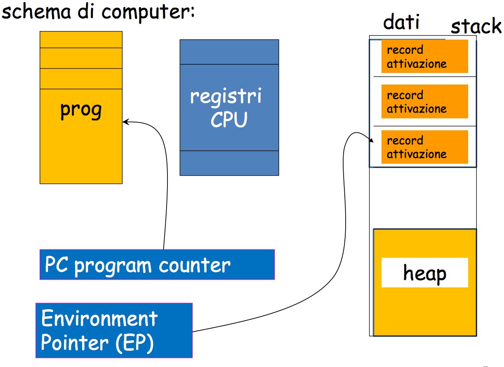
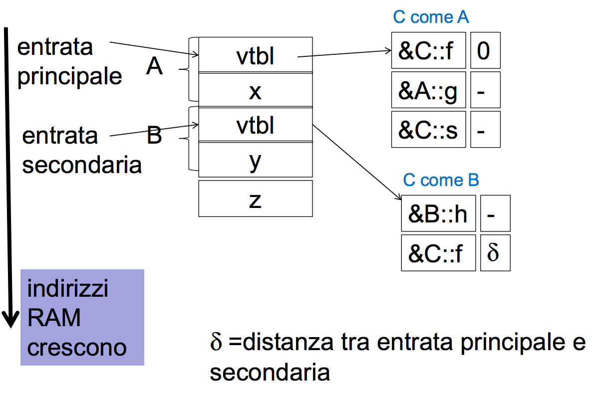
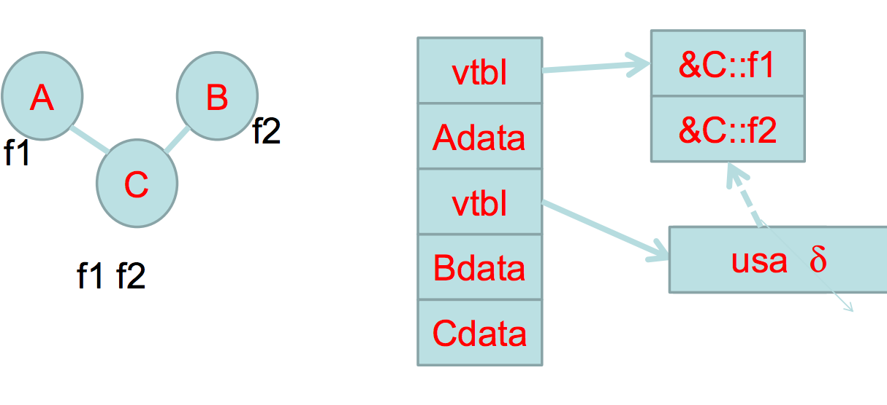
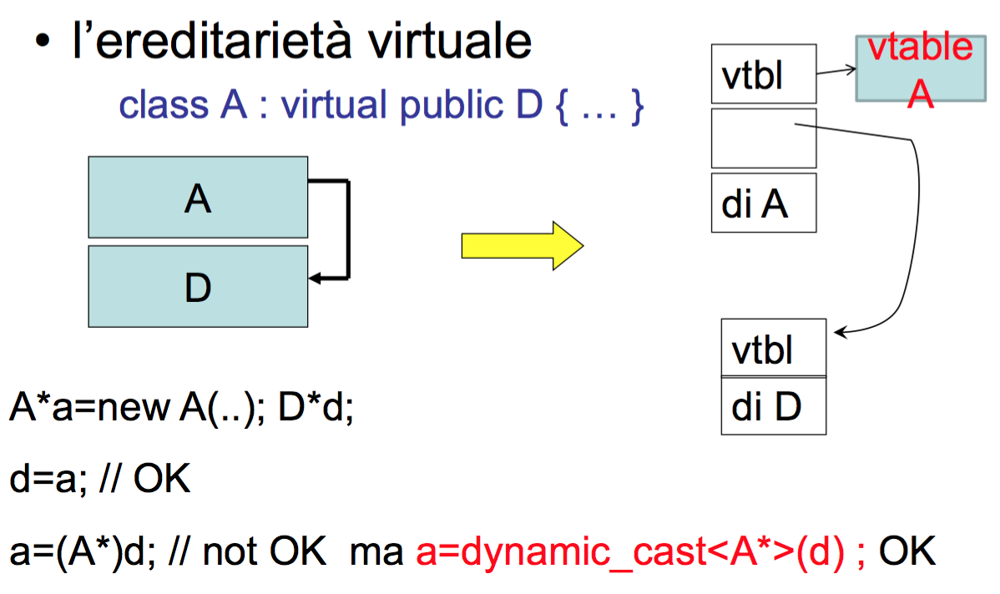
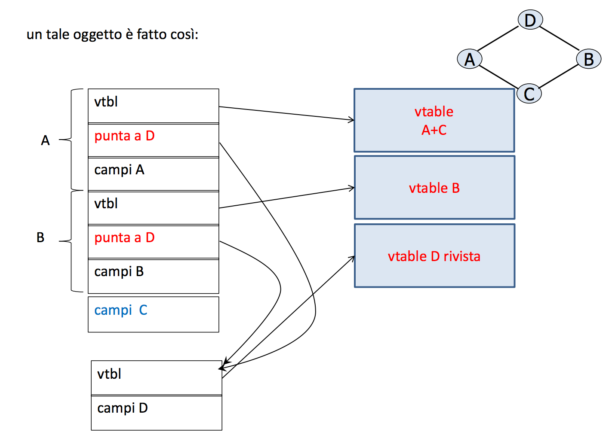
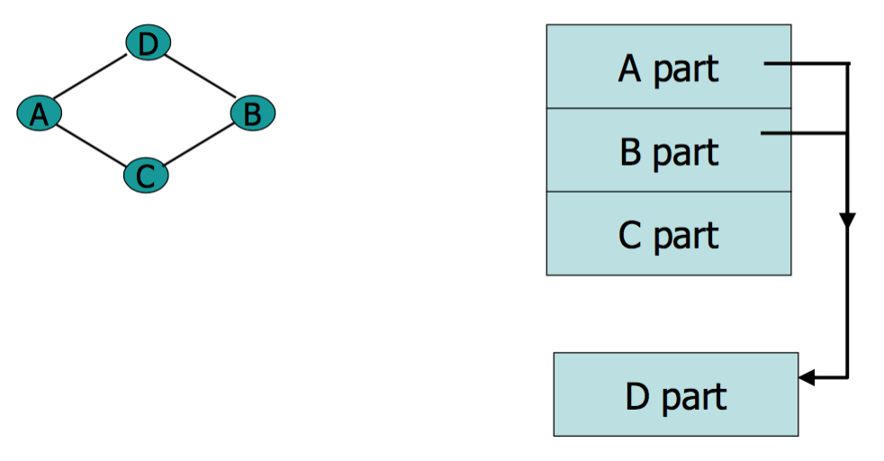
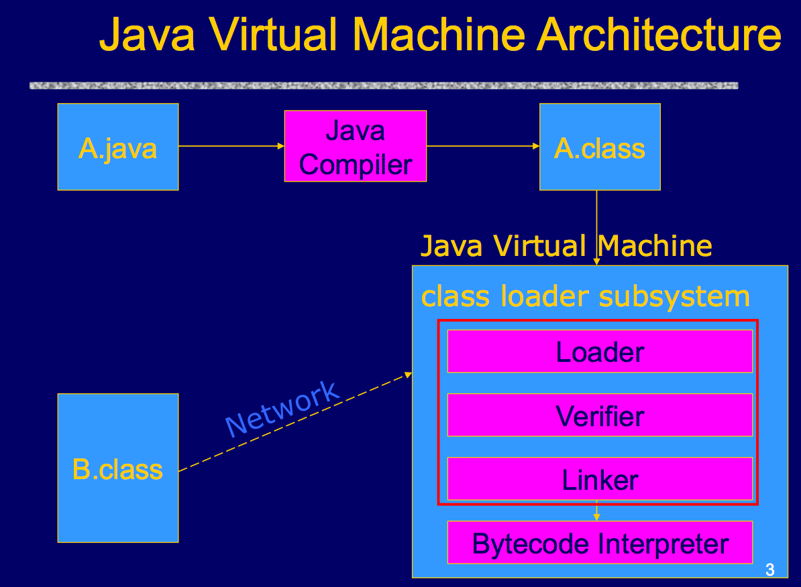
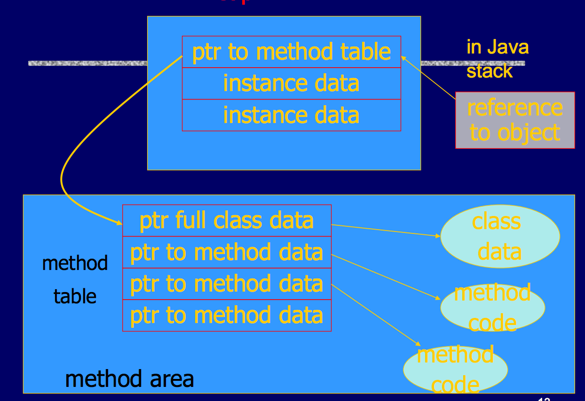
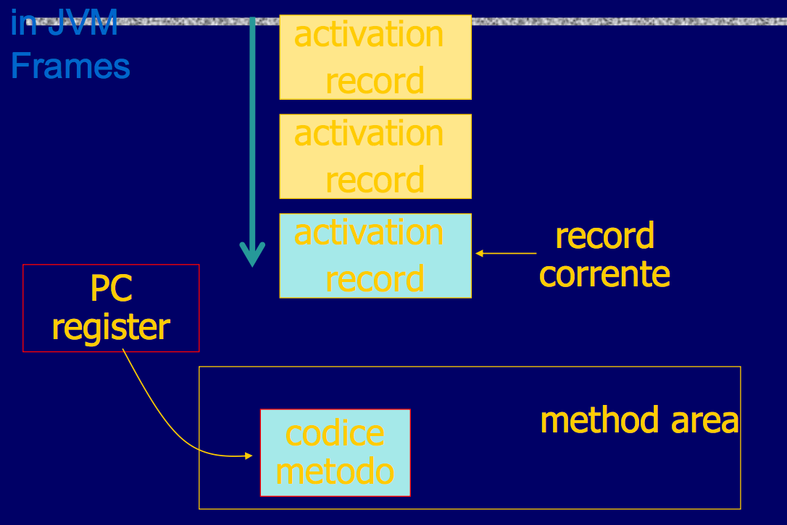
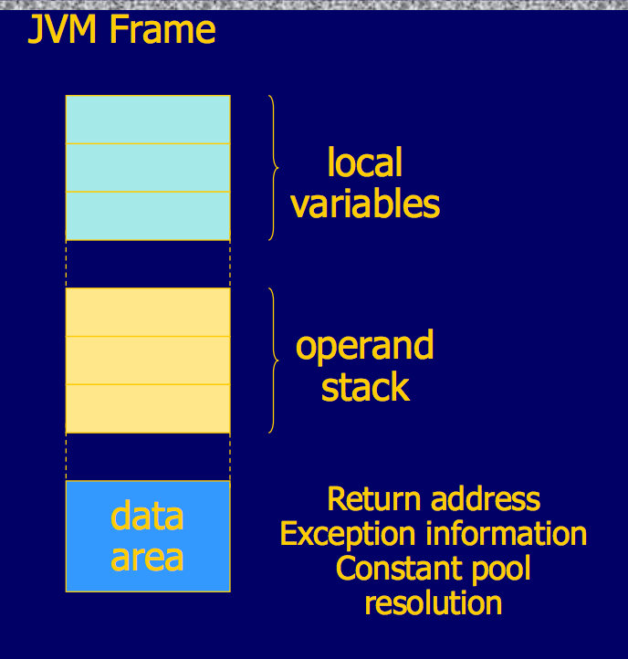

I primi linguaggi importanti per la storia sono il C/C++, Java e Haskell.
Il controllo dei tipi è iniziato dal Fortran (anni 50) con la gestione statica dei valori delle variabili. La prima versione del Fortran tuttavia non ammetteva ricorsinoe.
I linguaggi imperativi hanno un approccio più ingegneristico mentre quelli funzionali sono più matematici e astratti.
Al giorno d'oggi i linguaggi hanno caratteristiche miste, sia imperative che funzionali. Questo perché si cerca di andare verso un mondo parallelo e distribuito.
Il JavaScript è più ad oggetti che funzionale.
Codice Sorgente --> Compilatore --> Programma Oggetto --> Interprete
Ci sono sempre due fasi: quella di compilazione e quella di interpretazione.
Se è più importante la fase di compilazione si ottiene una maggiore efficienza e in alcuni casi il programma può essere eseguito direttamente (come nel C++).
Se è più importante la parte di interpetazione il programma è più sicuro e dinamico (meno crash), come Java.
Il calcolo di una funzione può non andare a buon fine, per un errore, come la divisione per 0 oppure perché semplicemente il calcolo non termina.
La non terminazione è un modo per creare un funzione parziale, cioè una funzione che non è calcolabile per alcuni valori.
Tutte le funzioni sono calcolabili? No. Kurt Göedel (anni '30).
Questa domanta è nata prima ancora dei computer attuali, questo perché erano presenti dei modelli di calcolo formale:
Tutti i modelli precedenti definiscono la stessa classe di funzioni --> formazilizzano il calcolo dello stesso modello di funzioni, le funzioni parziali ricorsive.
Tesi di Church: Tutte le funzioni parziali ricorsive sono calcolabili. Non è un teorema, ma una tesi in quanto è un concetto intuitivo che non è ancora stato dimostrato.
Tutto quello che può fare un computer moderno lo può fare anche una macchina di turing, il che vuol dire che tutti i linguaggi moderni sono turing completi, cioè sono in grado di calolcare tutte le funzioni calcolabili (funzioni parziali ricorsive).
La Turing completezza non aiuta quindi a confrontare tra loro i linguaggi di programmazione, perciò si preferisce utilizzare l'esperessività di un linguaggio come criterio di confronto ed è per questo che utilizziamo Java e non una macchina di turing.
L'espressività ha però un prezzo in efficienza e di conseguenza non è possibile creare il linguaggio di programmazione perfetto.
Göedel ha dimostrato che non tutte le funzioni sono calcolabili e questo è possibile dimostrarlo con una macchina di turing.
Consideriamo tutte le funzioni che possono essere calcolate con un "Si" o con un "No" (problemi decisionali).
f : I --> SI/NO
Göedel ha dimostrato che la decisione della terminazione di una macchina di turing non è decidibile (calcolabile).
I = <P, x>
P -> stringa che descrive una macchina di turing
x -> stringa scritta nel nastro di P
P(x) -> è il calcolo della macchina P su x
Se la terminazione di P su x è decidibile allora esiste un programma (o macchina di turing) Q che dato:
<P, x> --> Q(P,x) = SI se P(x) termina, NO altrimenti
Supponiamo che questo per assurdo sia vero.
Usando Q è quindi possibile definire D in modo che prenda in input una macchina di turing ed esegua Q(P,P) e che:
Cioè, se D(P) termina, allora vuol dire che la macchina P non riesce a calcolare se stessa, P(P) non è calcolabile. E viceversa.
Considerando l'esecuzione
D(D)
In questo caso viene eseguito Q(D,D) inquanto la macchina D è composta in parte da Q.
Così facendo, Q(D,D) calcola SI se D(D) termina e NO se D(D) non termina.
Ma se D(D) termina, allora per come è definito D(D) non dovrebbe terminare e viceversa.
Si arriva così ad una situazione assurda che dimostra che la terminazione di un programma non è calcolabile.
Tuttavia la terminazione di una macchina di turing è semi-decidibile, in quanto si può sempre dire se una macchina di turing termina (simulandola) ma non si può dire il contrario.
Anche perché se fosse possible, allora il problema totale sarebbe decidibile (basta una macchina di turing che simuli contemporaneamente due macchine di turing, ognuna che risolva uno dei due semi-problemi).
Un problema si dice indecidibile quando esiste un sotto-insieme infinito di istanze per il quale non è decidibile, tuttavia possono essere presenti alcune istanze per le quali il problema è decidbilie.
Siano R e R' due problemi (funzioni che vengono calcolate con un SI/NO) con R che è NON decidibile e R' di cui non si sa nulla.
Per ottenere delle informazioni su R' si riduce R a R'.
Cioè per ogni istanza I di R si cerca di costruire un istanza I' di R' tale che
R(I) = SI se e solo se R'(I') = SI
R(I) = NO se e solo se R'(I') = NO
Data una macchina di turing P:
HALT_V(P) = SI --> Se per ogni stringa x, P(x) termina
HALT_V(P) = NO --> se per qualche stringa x, P(x) non termina
Questo problema è indecidibile e si dimostra per riduzione, riducendo HALT ad HALT_V (HALT è la decidibilità della terminazione di una macchina di turing).
HALT HALT_V
\<P, x> --> Px
Bisogna quindi riuiscre a trasformare <P, x> in Px in modo che i risultati dei due problemi coincidano.
L'idea è quella di trovare una macchina di turing che si comporta, con qualsiasi input, come si comporta P(x).
Questa macchina è quindi definita come:
Px = P' : P
Dove P' è un programma che pulisce cancella l'input del nastro di P e lo sostiuisce con la stringa x.
In questo modo è facile vedere che
HALT(<P,x>) = SI se e solo se HALT_V(Px) = SI
Lo stesso meccanismo di riduzione di un problema per calcolarne la calcolabilità vale anche per la complessità (non di un algoritmo, ma del problema in se).
Se sappiamo che P ha complessità G(n) e sospettiamo che P' abbia complessità almeno G(n), si può trovare un algoritmo che riduce P in P' con una complessità c(n), tale che c(n) sia irrisoria rispetto a G(n) altrimenti tutta la baracca non avrebbe senso.
Se si riesce a trovare questo algoritmo, allora decidere P' costa F(n) con F(n) ≥ G(n).
Questo perché, altrimenti, potremmo decidere P in c(n) + F(n) < G(n).
Perché farebbe comodo riuscire a sapere se un programma scritto nei linguaggi di programmazione moderni termina o meno, senza andarlo ad eseguire.
A livello pratico tutte le proprietà interessanti dei linguaggi di programmazione non sono decidibili.
Cosideriamo una proprità k:
P = P' : P'' con P' che rispetta k e P'' che viola k.
P viola k se e solo se P' termina e quindi decidere se P viola k significa decidere se P' termina, con P' qualsiasi.
Il tutto questo per dire che durante la compilazione di un programma non possiamo sapere come questo si comporterà durante l'esecuzione.
Possiamo però approsimarne alcune proprietà.
Con l'analisi statica riusciamo a dire e ad avere la sicurezza che in una determinata parte del programma non ci siano errori.
L'analisi di un programma può essere fatta anche a runtime ma questo risulta meno efficiente.
if TEST then OK else ERRORE
Il compilatore dovrebbe rifiutarsi di compilare il programma perché non può decidere se c'è l'errore o meno (approccio pessimistico).
A runtime il test potrebbe essere sempre true e l'errore potrebbe non essere mai rilevato (situazione pericolosa).
Ha quindi più senso fare dei controlli a compile time.
Nel caso dei tipi questo controllo viene fatto sia a runtime che a compile time.
Si cerca comunque di fare il massimo possibile a compile time dal momento che è più efficiente, però alcune cose, come il bound-check di un array, possono essere fatte solo a runtime.
:t f per sapere il tipo della funzione f.let per definire delle costanti, viene usato solo nell'ambiente ghci, dentro un file non è necessarioit contiene l'ultimo valore calcolatoVengono invocate con il nome, seprato da un spazio, seguito dai parametri, ognuno seprato da uno spazio
foo param1 param2
Non ci sono le parentesi nell'invocazione, quelle vengono utilizzate solamente per esprimere la priorità d'esecuzione
foo (foo 3)
-- in modo imperativo sarebbe
foo(foo(3))
-- e non questo
foo(foo,3)
Una funzione si definisce nel seguente modo:
doubleUs x y = x*2 + y*2
L'apostrofo può comparire nel nome della funzione.
Le funzioni non possono iniziare con una lettera maiuscola.
Se una funzione non riceve dei parametri diventa una definition o name.
Prelude> let g a b = a+b
Prelude> :t g
g :: Num a => a -> a -> a
La funzione g dell'esempio è detta currificata. Una funzione che può prendere vari parametri ma li elabora uno alla volta.
a -> a -> a è il tipo della funzione g
Prelude> let h x = g x
Prelude> :t h
h :: Num a => a -> a -> a
g aspetta due parametri per far la somma, se a g passo un solo parametro ottengo una funzione che aspetta i restanti parametri, necessari per eseguire g.
Una funzione currificata è quindi una funzione a cui non è necessario passare tutti i parametri, ma li aspettano uno alla volta.
questo dovrebbe essere il significato della ->
Prelude> let q = h 3
q invoca h con 3 e ritorna g con già un parametro passato.
Prelude> q 4
7
Quando esegue q 4 viene passato il secondo parametro che permette l'esecuzione di g, la quale ritorna 7.
Nella descrizione del tipo di una funzione la prima parte (Num a) specifica che c'è un solo tipo, in questo caso numerico.
Mentre la seconda parte, dopo la => specifica il tipo dei parametri e del valore di ritorno.
Quindi a -> a -> a specifica che il primo parametro, il secondo parametro e il valore di ritorno hanno tutti lo stesso tipo.
Prelude> :t (==)
(==) :: Eq a => a -> a -> Bool
Eq racchiude tutti i tipi che sono tra loro confrontabili.
a -> a -> Bool specifica che vengo presi due parametri dello stesso tipo e viene ritornato un valore booleano.
Quando definisco dei miei tipi, posso specificare che appartengono alla categoria di Eq.
Nel caso il tipo di una funzione includa un maggior numero di tipi, questo viene descritto come Num a, Num b, Num c => a -> b -> c
Prelude> let asd = (==) 2
Prelude> :t asd
asd :: (Eq a, Num a) => a -> Bool
In questo caso il tipo a deve essere sia numerico, sia confrontabile. La funzione ritorna come valore una funzione currificata, che in questo caso è la funzione == che si aspetta un secondo parametro.
Prelude> asd 2
True
Prelude> asd 32
False
Le funzioni polimorfe sono quelle che accettano variabili di qualsiasi tipo.
:t head
head :: [a] -> a
else è obbligatoriothen da metteredoubleSmallNumber x = if x > 100
then x
else x*2
Nelle liste è possibile tenere solo elementi di uno stesso tipo.
Per concantenare due liste c'è l'operatore ++.
Le stringhe vengono considerate come liste di caratteri.
L'operatore : permette di inserire in testa ad una lista.
ghci> 5:[1,2,3,4,5]
[5,1,2,3,4,5]
Si possono definire liste di liste di liste. Hell yeah!
Gli operatori di disuguaglianza <,>,<=,>= permettono di confrontare delle liste in odrine lessicografico.
Modo compatto di esprimere liste che deriva dalla notazione matematica.
Prelude> [x*2 | x <- [1..10], x*2 >= 12]
[12,14,16,18,20]
Prelude> let removeNonUppercase st = [c | c <- st, c `elem` ['A'..'Z']]
Prelude> removeNonUppercase "pIPPo"
"IPP"
Sono presenti delle classi di tipo che raggruppano tipi tra loro simili sui quali è possibile eseguire funzioni simili.
Ad esempio Num raggruppa tutti i tipi che si comportano come numeri.
Prelude> let head' [] = error "No head for empty list"
Prelude> let head' (x:_) = x
Prelude> :t head'
head' :: [t] -> t
Posso definire delle funzioni con lo stesso nome per "matchare" i vari parametri possibili.
(x:_) mactha tutti i parametri che sono una lista, x è il primo elemento, _ matcha un valore qualsiasi, : concatena x con il valore qualsiasi, ottenendo così una lista.
(x:xs) in questo caso avviene lo stesso match, solo che con xs ho il valore del resto della lista.
Posso anche usare una versione alternativa del pattern matching tra parametri che è equivalente.
head'' xs = case xs of [] -> error "no head"
(x:_) -> x
max' :: (Ord a) => a -> a -> a
max' a b
| a > b = a
| otherwise = b
Rappresentano una specie di if-elseif.
Da notare che nella definzione della funzione non serve usare l'uguale.
initials :: String -> String -> String
initials firstname lastname = [f] ++ ". " ++ [l] ++". "
where (f:_) = firstname
(l:_) = lastname
*Main> initials "giacomo" "manzoli"
"g. m. "
initials' :: String -> String -> String
initials' firstname lastname = let
(f:_) = firstname
(l:_) = lastname
in
[f] ++ ". " ++ [l] ++". "
Let-in ritorna un'esperessione, mentre where permette di definire delle costanti all'interno di un'espressione.
f3 :: [a] -> ([a],[a],[a],[a])
f3 l = let
aux [] = ([],[])
aux (x:[]) = ([x],[])
aux (x:y:xs) = ([x,y],xs)
in
let
(x1,y1) = aux l
(x2,y2) = aux y1
(x3,y3) = aux y2
in
(x1,x2,x3,y3)
Tipi definiti dall'utente.
data Shape = Circle Float Float Float | Rectangle Float Float Float Float
Definisco il tipo Shape che può essere costituito da valori conformi alla parte Circle o Rectangle.
Da notare l'utilizzo delle maiuscole per il nome del tipo o dei costruttori
Prelude> :t Circle
Circle :: Float -> Float -> Float -> Shape
Prelude> :t Rectangle
Rectangle :: Float -> Float -> Float -> Float -> Shape
I due costruttori sono delle normali funzioni che si aspettano dei parametri.
Tuttavia con questa definzione il sistema non sa stampare il tipo Shape, è quindi necessario specificare che Shape è stampabile:
data Shape = Circle Float Float Float | Rectangle Float Float Float Float deriving Show
In questo modo si specifica che Shape fa parte della classe dei tipi stampabili.
Prelude> Circle 2 3 4
Circle 2.0 3.0 4.0
-- viene stampata la stringa utilizzata per invocare il costruttore
Questa cosa funziona out-of-the-box solo nel caso i valori che costituiscono il tipo derivano anche essi da Show.
data Point = Point Float Float deriving (Show)
data Shape = Circle Point Float | Rectangle Point Point deriving (Show)
Point deve derivare da Show altrimenti si verifica un errore.
Da notare che il nome del costruttore può o meno matchare il nome del tipo.
Prelude> :t Circle
Circle :: Point -> Float -> Shape
Prelude> let p = Point 10 20
Prelude> Circle p 20
Circle (Point 10.0 20.0) 20.0
-- da notare che Circle 2 3 4 non funziona più
Prelude> Circle (Point 10 20) 5
Circle (Point 10.0 20.0) 5.0
surface :: Shape -> Float
surface (Circle _ _ r) = pi * r ^ 2
surface (Rectangle x1 y1 x2 y2) = (abs $ x2 - x1) - (abs $ y2 - y1)
Da notare che quando definisco la funzione per un determinato tipo posso fare il pattern matching sulla tipologia del costruttore.
La funzione surface dell'esempio funziona con la versione del costruttore senza il tipo Point.
module Shape
(
Point(..)
,Shape(..)
,surface
) where
-- definzione delle funzioni
In questo modo, quando viene fatto l'include si vedono solo le funzioni in lista.
Il (..) permette di esportare anche la definzione dei costruttori.
data Tree a = EmptyTree | Node a (Tree a) (Tree a) deriving (Eq, Show, Read)
Prelude> :t Node
Node :: a -> Tree a -> Tree a -> Tree a
In questo caso il tipo a speficia il tipo del contenuto di un nodo, gli altri Tree rappresentano i due sotto alberi. Il tipo Tree è quindi parametrico.
Da notare che a può non essere derivato da Show, in questo caso l'errore può essere rilevato solo a runtime.
Prelude> let x = Node 2 (Node 4 EmptyTree EmptyTree) (Node 5 EmptyTree EmptyTree)
Prelude> x
Node 2 (Node 4 EmptyTree EmptyTree) (Node 5 EmptyTree EmptyTree)
Prelude> :t x
x :: Num a => Tree a
La stampa di defualt viene quindi fatta in modo prefisso.
Da notare che in questo caso l'applicazione di una di queste funzioni non è altro che la rappresentazione di se stessa, diventa quindi un'interpretazione libera.
In questo modo si ottiene un simbolismo che permette di calcolare le funzioni per ogni possibile interpretazione.
Ad esempio se ho la funzione 3 + 4 grazie all'interpretazione libera il calcolo della funzione ha come valore 3 + 4, in questo modo posso usare al posto di + una funzione qualsiasi, ottenendo sia 7 se applico il significato classico, oppure potrei ottenere 12 se decido che nel mio programma l'applicazione del + coincide con la moltiplicazione classica.
Nella definzione di Tree c'è anche la derivazione da Read il quale permette di invocare il costruttore a partire da una stringa.
data Person = Person { firstName :: String
, lastName :: String
, age :: Int
, height :: Float
, phoneNumber :: String
, flavor :: String
} deriving (Show)
Prelude> :t Person
Person
:: String -> String -> Int -> Float -> String -> String -> Person
let x = Person {firstName=“Gigi“, lastName="Asd", age=12, height=184, phoneNumber="123123", flavor="123123"}
Prelude> :t x
x :: Person
Prelude> firstName x
"Gigi"
In questo modo posso usare delle esperssioni come firstName x per accedere al primo nome.
Altrimenti avrei dovuto utilizzare la sintassi pattern matching per accedere ai vari campi (firstName _ _ ...) = x.
data Maybe a = Nothing | Just a
Questa cosa è importante per riuscire a gestire le eccezioni in modo dichiarativo.
Viene usato Nothing per far terminare il calcolo.
Sarà importante per il progetto.
Prelude> :t Just "HAHAH"
Just "HAHAH" :: Maybe [Char]
Prelude> :t Just 23
Just 23 :: Num a => Maybe a
Prelude> :t Nothing
Nothing :: Maybe a
data Either a b = Left a | Right b
Prelude> let z = Left 2
Prelude> :t z
z :: Num a => Either a b
Either può contenere al suo interno due valori. In questo modo posso fare una funzione che ritorna un valore che può essere di un tipo o di un altro.
Il tutto in un modo sicuro rispetto ai tipi.
class Eq a where
(==) :: a -> a -> Bool
(/=) :: a -> a -> Bool
x == y = not (x /= y)
x /= y = not (x == y)
Replica della definzione della classe Eq, vengono fornite le definzioni delle funzioni che il tipo deve implementare per appartenere alla famiglia di Eq.
La seconda parte permette di definire una sola funzione come contrario dell'altra rendendo necessaria l'implementazione di solo una delle due funzioni.
data TrafficLight = Red | Yellow | Green
instance Eq TrafficLight where
Red == Red = Ture
Yellow == Yellow = Ture
Green == Green = True
_ == _ = Flase
In questo modo il tipo TrafficLight appartiene ad Eq con la definizione della funzione == secondo pattern matching.
istance Show TrafficLight where
show Red = "Red Light"
show Yellow = "Yellow Light"
show Green = "Green Light"
In questo modo vado a definire come mostrare i vari tipi dentro una classe di tipi.
class YesNo a where
yesno :: a -> Bool
-- spefico che anche il tipo lista di qualcuno tipo appartiene alla classe YesNo
instance YesNo [a] where
yesno [] = false
yesno _ = true
Prelude> :t map
map :: (a -> b) -> [a] -> [b]
Prelude> map (++ "!")["hey", "ho"]
["hey!","ho!"]
map permette di applicare una funzione a tutti gli elementi di una lista.
Prelude> :t filter
filter :: (a -> Bool) -> [a] -> [a]
filter permette di filtare i dati su una lista
Prelude> :t foldl
foldl :: Foldable t => (b -> a -> b) -> b -> t a -> b
Prelude> let sum xs = foldl (+) 0 xs
Prelude> sum [1..5]
15
foldl permette di trasformare una lista in un valore unico.
Esiste anche foldr che esamina la lista a partire da destra.
data Tree a = EmptyTree | Node a (Tree a) (Tree a) deriving (Eq, Show, Read)
singleton :: a -> Tree a
singleton x = Node x EmptyTree EmptyTree
treeInsert :: (Ord a) => a -> Tree a -> Tree a
treeInsert x EmptyTree = singleton x
treeInsert x (Node a left right)
| x == a = Node x left right --non inserisco se uguale
| x < a = Node a (treeInsert x left) right
| x > a = Node a left (treeInsert x right)
In questo modo ho definito sia un albero, sia una funzione che mi permette di creare un albero binario di ricerca con valori tutti diversi.
*Main> let nums = [8,6,4,1,7,3,5]
*Main> let numsTree = foldr treeInsert EmptyTree nums
*Main> numsTree
Node 5 (Node 3 (Node 1 EmptyTree EmptyTree) (Node 4 EmptyTree EmptyTree)) (Node 7 (Node 6 EmptyTree EmptyTree) (Node 8 EmptyTree EmptyTree))
class Functor f where
fmap :: (a -> b) -> f a -> f b
Per essere un funtore il tipo f (f è un tipo parametrico) deve avere una funzione fmap che data una funzione e un oggetto che contiene un valore sul quale può essere applicata quella funzione, ritorna un'altro oggetto contenente il risultato dell'applicazione della funzione.
L'idea è che un funtore è una generalizzazione della funzione map.
Esempio: f = costruttore [] dove [] :: a -> [a]
instance Functor [] where
fmap = map
*Main> :t fmap
fmap :: Functor f => (a -> b) -> f a -> f b
*Main> :t map
map :: (a -> b) -> [a] -> [b]
*Main> :t []
[] :: [t]
Ovunque ci sia un "involucro" che contiene dei valori deve essere possibile "spalmare" su quei valori una funzione.
instance Functor Maybe where
fmap f (Just x) = Just (f x)
fmap f Nothing = Nothing
Quando mi trovo un Just x devo solo applicare f ad x.
Se non ho niente (Nothing) non faccio niente. Utile in quanto se Nothing rappresenta un'errore, questo risulta invariato.
instance Functor Tree where
fmap f EmptyTree = EmptyTree
fmap f (Node x leftsub rightsub) = Node (f x) (fmap f leftsub) (fmap f rightsub)
In questo modo riusciamo a spalmare l'esecuzione di una funzione su un albero.
Se l'albero è vuoto non faccio nulla.
Se l'albero ha un nodo, prima applico la funzione al nodo e poi la passo ai vari sotto alberi.
instance Functor (Either a) where
fmap f (Right x) = Right (f x)
fmap f (Left x) = Left x
In questo caso f viene spalmata solo su uno dei due tipi.
L'input è impuro, ma tranquilli che non ci sono roghi.
main = do
putStrLn "Hello world"
name <- getLine -- questa è un'assegnazione ad una costante
putStrLn name
Da notare i tipi
*Main> :t putStrLn
putStrLn :: String -> IO ()
*Main> :t getLine
getLine :: IO String
La classe funtore prende una funzione di a -> b e un parametro di tipo parametrico f instanstanziato ad un tipo a e ritorna un tipo f instanziato ad un tipo b.
L'input/output si deve essere sempre dentro il main.
main = do
putStrln "Hello world"
name <- getLine
putStrLn name
main = do
c <- getChar
if c /= ''
then do
putChar c
main
else return ()
Prelude> :t return
return :: (Functor m) => a -> m a
m non è un vero e proprio funtore ma lo si può considerare tale. La funzione ritorna quindi un funtore istanziato al tipo a.
IO è un type constructor e un'instaza di Functor.
instance Functor IO where
fmap f action = do
result <- action
return (f result)
Quindi si può fare qualcosa del genere:
main = do
line <- fmap reverse getLine
putStrLn $ "You said " ++ line ++ " backwards!"
$ ghc --make prova //Compila
$ ./prova //Esegue
La prima parte del progetto si tratta di codificare un programma haskell che sia in grado ti effettuare l'analisi lessicare di un programma scritto il LispKit.
LispKit è il linguaggio di programmazione che verrà utilizzato per tutto il progetto. È funzionale ed ammette funzioni ricorsive.
Bisogna effettuare delle modifiche al linguaggio in modo che la grammatica sia LL-1.
L'analisi lessicale viene fatta da un automa a stati finiti.
L'analizzatore deve produrre una lista di Token.
In Haskell non è necessario andare a specificare i tipi, si occupa il compilatore di fare inferenza di tipo.
let f x = 2 + x
f :: Num -> Num
In questo caso il compilatore inferisce che x è di tipo Num in quanto 2 è una costante di tipo Num.
Il compilatore trasforma fun f x = 2 + x in *lamba*x.((+2)x) e crea una specie di albero.
Vengono poi valutati i tipi delle foglie, che in questo caso sono Num -> Num -> Num per l'operatore + e Num per la costante 2.
L'albero è composto da due tipi di nodi: lambda o vincoli per astrazione e @ per i vincoli applicazione.
Vincolo per astrazione: (lambda x.y) se x è di tipo a e y è di tipo b, allora il tipo è a -> b.
Vincolo per applicazione: se f ha tipo a, il suo argomento e ha tipo b e (f e) ha tipo c allora: a = b -> c.
Il nodo lambda è associato alla funzione anonima e genera un vincolo r = u -> s, con u che è una variabile di tipo per x e s è il tipo del valore di ritorno.
Quando viene valutato il nodo @ per + e 2 il compilatore genera il vincolo Num -> Num -> Num = Num -> t. Perché il vincolo sia soddisfatto t deve essere uguale a Num -> Num
Per l'altro nodo @ tra +2 e x viene generator il vincolo t = u -> s.
Infine, sapendo che t = Num -> Num allora t = u -> s ==> u = Num, s = Num.
Possono verificarsi delle situazioni circolari in cui non si riesce ad inferire in modo automatico i tipo. Questo perché una variabile di tipo può dipendere da un'altra variabile di tipo che a sua volta dipende dalla prima.
La profondità dell'albero viene influenzata dal fatto che le funzioni sono currificate.
L'albero dell'inferenza è creato da due tipi di nodi, i nodi lambda che hanno come simbolo \ e i nodi applicazione che hanno come simbolo @.
Quando si sta analizzando la definizione di una funzione viene creato un nodo \.
Questo nodo sempre come figlio sinistro un parametro della funzione preso in sequenza, cioè il primo nodo \ ha il primo parametro, il secondo nodo \ ha il secondo parametro e così via.
Il figlio destro di un nodo \ può essere o un'altro nodo \ nel caso la funzione abbia più di un parametro, oppure un nodo @.
Un nodo di questo tipo da origine ad un vincolo del tipo:
TipoNodoRadice = TipoNodoFiglioSinistro -> TipoFiglioNodoDestro
ad esempio, facendo riferimento all'esempio di prima
r = t -> w
Questi nodi vengono creati quando si valuta l'applicazione di una funzione.
Al contrario dei nodi lambda, in questo caso se la funzione ha più parametri, si espande l'albero a sinistra, questo deriva dal fatto che in Haskell tutte le funzioni sono currificate.
Il figlio sinistro di un nodo applicazione può essere o un'altro nodo applicazione, nel caso la funzione abbia più parametri, oppure una funzione.
Sempre nell'esempio sopra, il nodo @ rappresenta l'applicazione di f x, e da quel nodo si deriva il vincolo t = u -> s.
Che generalizzato diventa:
TipoNodoFiglioSinistro = TipoNodoFiglioDestro -> TipoNodoPadre
Nel caso la funzione richiede l'invocazione di una funzione utilizzi più parametri, come già detto, si espande a sinistra.
Ad esempio l'albero per l'applicazione della funzione f a b porta al seguente albero.
(@)
/ \
(@) b
/ \
f a
Cioè il figlio destro rappresenta l'ultimo dei parametri dell'applicazione, mentre il figlio sinistro è un'altro nodo applicazione.
Complicando ancora le cose, l'applicazione della funzione f a (g b) diventa abbastanza divertente, inquanto entrambi i figli del primo nodo sono entrambi nodi applicazione.
(@)
/ \
(@) (@)
/ \ / \
f a g b
Questo perché l'ultimo parametro è il risultato dell'applicazione della funzione g sul valore b
In questo caso si aggiunge il vincolo che il tipo della funzione deve essere uguale a quello presente come nodo dell'albero.
In modo simile per le funzioni con definizioni multiple deve avere il vincolo il tipo di tutte le funzioni coincida.
Il significato della -> in haskell:
tipo di una funzione f: a -> b -> c
(->)
/ \
a (->)
/ \
b c
Rappresentato come stringa:
->(a, ->(b,c))
Questo perché, essendo currificate, f è una funzione che dato un parametro a ritorna una funzione di tipo b -> c.
Se c'è un tipo funzione in mezzo, la cosa è la stessa:
tipo di una funzione f: a -> (b -> c) -> d
(->)
/ \
a (->)
/ \
(->) d
/ \
b c
Rappresentato come stringa:
->(a, ->((b->c), d)
Gli alberi di questo tipo possono essere confrontati a partire dalla radice e matchando le varie frecce, in questo modo è possibile definire delle equazioni tra i tipi delle foglie.
Alb1
(->)
/ \
a (->)
/ \
(->) a
/ \
c [a]
Alb2
(->)
/ \
d (->)
/ \
e f
Alb2 = Alb1:
- d = a
- e = ->(c,[a])
- f = a
In questo caso è preferibile utilizzare / come notazione al posto dell'=. Questo perché l'operazione che si fa è una sostituzione piuttosto che un'uguaglianza.
Nell'esempio di prima si ha:
a/d
a/f
e/->(c,[a])
In questo caso è necessario propagare il valore di a:
a/f
d/f
e/->(c,[f])
può essere espresso anche come (insieme di binding):
{a/f, e/->(c,[f]), d/f}
In questo caso non cambia nulla, ma è sempre preferibile tenere sempre lo stesso valore a destra, cioè f.
Una volta trovato un binding si devono fare le sostituzioni nei due alberi, se dopo le sostituzioni i due alberi sono uguali, allora ho trovato una soluzione.
Nelle espressioni di binding, alla sinistra devono comparire solo variabili distinte che non compaiono mai a destra.
Per indicare che si applica una sostituzione ad un albero si usa la notazione T σ.
L'applicazione di una sostituzione è idempotente:
(T σ) σ = T σ
Tipicamente nella notazione non viene utilizzata la ->, di solito si associa un'arietà ad ogni simbolo.
{f/3, f/4, g/2, a/0} + eventuali variabili
f/4
/ / \ \
/ / \ \
f/3 g/2 a a
/ | \ / \
a g a a a
/ \
a a
Se un termine non ha variabili si dice ground.
σ1 = {x1/t1, ..., xn/tn} σ2 = {y1/s1, ..., yn/sn}
La composizione di queste due soluzioni è data da
σ1 𝜸 σ2 = {x1/(t1 σ2), ..., xn/(tn σ2)} ∪ {yj/sj | yj non è in {x1 ... xn}}.
Anche se l'applicazione di una sostituzione è idempotente, la composizione non lo è.
Si dice che σ1 >= σ2 se esiste σ3 tale che σ1𝜸σ3 = σ2.
Questo vuol dire che per ottenere lo stesso effetto di σ2 devo comporre σ1 con un'altra sostituzione σ3.
Questo vuol dire che σ1 è più generale di σ2, allo stesso modo, σ2 è più istanziata di σ1
Ad esempio:
σ1 = {x/y} σ2 = {x/[Int]}
allora
σ1 >= σ2
e
σ3 = {y/[Int]}
σ1 𝜸 σ3 = σ2
(anche se Filè dice che non è del tutto vero)
Se σ1 𝜸 σ2 = σ2 e σ2 𝜸 σ1 = σ1 allora si dice che le due sostituzioni sono equivalenti.
Una sostituzione è ground se non ha variabili nelle parti destre dei binding.
Dato un sistema di equazioni E, si indica con Gsol(E) o Grosol(E) l'insieme delle sostituzioni che sono soluzioni ground di E.
Se Gsol(E) non è vuoto allora E è risolvibile, mentre se Gsol(E) == Gsol(E') allora si dice che E è equivalente ad E'.
Sistema di equazioni in forma risolta: E = {x = f(y), z = f(g(y))}, questo sistema è idempotente e le parti sinistre delle equazioni sono solo variabili.
σE = {x/f(y), z/f(g(y))} è una soluzione di E, quindi E è una rappresentazione compatta di tutte le sue soluzioni, comprese quelle ground.
Se σ è una soluzione di ground di E allora σ <= σE, cioè esiste una soluzione σ' tale che σ = σE 𝜸 σ.
Questo vuol dire che σE è la soluzione più generale di tutte e di conseguenza espire tutto Grosol(E).
Si parte da due insiemi di equazioni e si cerca di andare a fare delle sostituzioni, in modo da arrivare ad un unico insieme di equazioni in forma risolta, facendo in modo che il numero di soluzioni ground non cambi.
x = x --> vengono eliminate tutte le equazioni di questo tipo.t = x con t non variabile viene trasformato in x = t. Trasformo le varie equazioni in modo che siano già in forma risolta.x = t, con t diverso da x e x ha altre occorrenze in E, allora se x compare in t ho un fallimento (ovvero esiste un'equazione x = t(x), questo tipo di equazione non può essere trattato), altrimenti sostituisco ogni occorrenza di x in t (Faccio la propagazione delle equazioni risolte).{g(x)=g(g(z)), f(a,z)=f(a,y)}
g = g
| |
x g
|
z
e
f = f
/ \ / \
a z a y
passo alla notazione lineare
{
x = g(z),
a = a, //Può essere scartata (passo 3 dell'algoritmo)
z = y
}
applico il passo 5 dell'algoritmo
{
x = g(y) //Sostituisco z con y
z = y
}
posso riespandere la notazione per ottenere i due alberi
g = g
| |
g g
| |
y y
e
f = f
/ \ / \
a y a y
E, l'algoritmo termina sempre, perché ad ogni iterazione diminuisce il numero di equazioni.E', in forma risolta e risolvibile, con Grosol(E) = Grosol(E')E non è risolvibile.Dimostrazione:
E.f(u) = f(v) --> u = v, questo perché una soluzione ground per la prima equazione porrebbe le variabili u e v ad uno stesso tipo, soddisfacendo anche la seconda equazione. Se le due equazioni sono più complesse, si applica lo stesso ragiornamento, ricorsivamente tra i vari sotto-termini.t = x --> x = t, questo perché è un'equazione.x = t, per ogni soluzione σ di E1 deve essere che (x) σ = (t) σ, quindi dovunque in E1 si trova x, questa può essere sostituita con t, mantenendo comunque la soluzione σ. (Manca la dimostrazione del fallimento, sarà nella prossima lezione).Dimostrazione della correttezza dell'algoritmo di unione
Per ogni passo E1 -> E2 che ha successo vale che i due insiemi hanno le stesse soluzioni ground.
Passo (1): f(u1,..., un) = f(v1,..., vn) --> u1 = v1 ... un = vn
Prendendo una soluzione σ e applicandola u1 σ, questo deve essere uguale a v1 σ, il che applicato a tutte le varie equazioni le rende trivialmente verificiate.
Passo (3): t = x --> x = t, questo perché è un'equazione.
Passo (5): applicazione delle uguaglianze x = t.
Se l'applicazione ha successo, per ogni soluzione σ di E1 deve essere che x σ = t σ quindi per ogni equazione in E1 contentente x possiamo sostiturla con t mantenendo la soluzione σ.
Bisogna comunque dimostrare che le soluzioni ground rimangono, ma se applico σ al risultato, se una soluzione è ground per il risultato, questa deve essere una soluzione valida anche per il sistema di equazioni originario.
Alla fine del processo, se non c'è un fallimento, si raggiunge E2 che è in forma risolta, questo perché se non fosse vero potrei applicare delle altre regole e quindi non avrei terminato.
Forma risolta: sistema composto da equazioni che nella parte sinistra hanno solo una variabile. Quando un sistema è espresso in questa forma diventa una rappresentazione compatta di tutte le sue possibili soluzioni.
dimostrazione in qualche modo di quello che c'è scritto sopra
{x1, ..., xn} sono tutte distinte e {x1,..,xn} ∩ l'unione di Var(ti) = ∅:
Se va tutto bene, l'algoritmo termina e il sistema di equazioni è già in forma risolta e consiste anche in una possibile soluzione generale per il sistema di equazioni di partenza.
Fallimento dovuto al caso (2): è ovvio che non ci sono soluzioni per f(...) = g(...) non ci sono neanche soluzione per il sistema.
Fallimento dovuto al caso (5): E1 contiene x = t con t non vuoto e che contiene x, questa equazione quindi non ha soluzione, pertanto anche E1 non ha soluzione.
In caso di successo E' è in forma risolta e quindi lo possiamo vedere come una soluzione σE' e funziona sia come soluzione di E' (banalmente perché è in forma risolta e istanziando ulteriormente σE' otteniamo tutte le soluzioni ground di E') sia come soluzione di E, perché tutte le soluzioni ground di E' sono anche soluzioni di E (per costruzione di E').
Inoltre, σE' è una soluzione più generale di E, perché per ogni altra soluzione σ di E, σE' >= σ. (most general unifier)
Possono esistere diversi unificatori più generali, ma sono sempre un numero finito e sono tutti "quasi uguali".
Ad esempio { w/f(v), x/u, y/u, z/v } e { w/f(z), x/y, u/y, v/z} sono equivalenti.
Infatti in entrambe {x=u=y} e {z=v} ma sono sostituzioni che rappresentano questo in modo diferso.
Sono quindi delle variabili di tipo che restano libere e scegliere un nome al posto di un altro per una variabile è indifferente.
{y/u, z/v} e {u/y, v/z} rappresentano la stessa classe di variabili.
Per la cronaca: le cose si complicano se si considerano sostituzioni non idempotenti, in questo caso esisstono un'infinità di unificatori più generali.
Cosa abbiamo dimostrato sulla type inference di Haskell?
Grammatica libera da contesto per le espressioni:
e ::= n | e + e | e - e n ::= d | nd d ::= 0 | 1 | 2 | ...
Vengono fatte delle derivazioni che generano forme sentenziali, fino ad arrivare a stringhe terminali che rappresentano il linguaggio generato dalla grammatica.
Ogni derivazione di una grammatica può essere rappresentata come un albero.
e -> e - e -> n - e -> n - e + e -> ... -> 10 - 15 + 12
e
/ | \
e - e
| / | \
n e + e
| | |
10 n n
| |
15 12
L'albero oltre che a specificare la stringa visualizzata, specifica anche l'ordine in cui la stringa deve essere valutata, che in questo caso è 10 - (15 + 12).
Questo albero per noi è fondamentale in quanto lo usiamo per generare codice.
La generazione dell'albero però può essere ambigua, in quanto la stessa espressione 10 - 15 + 12 può essere generata da due alberi dirversi che specificano un ordine di valutazione dell'espressione in modo diverso, che portano a risultati diverse.
Una grammatica alternativa che permette di generare le stesse espressioni in modo non ambiguo è data da:
e ::= num | e <op> num
<op> ::= + | -
In questo modo viene vincolata la precedenza a sinistra tipica delle espressioni algebriche.
Però questa grammatica non permette la parentesizzazione delle espressioni.
e ::= o | e <op> o o ::= num | (e)
<op> ::= + | -
La grammatica rimane comunque non ambigua.
Ci sono però dei linguaggi che sono interamente ambigui, però per quello che riguarda i linguaggi di programmazione è facile creare delle grammatiche non ambigue.
Lungua presentazione della seconda parte progetto
Linguaggio di programmazione sviluppato da Backus/McCarthy ed è stato lo standard accademico fino all'avvento del Pascal.
Punti salienti del linguaggio:
begin-end;Punti scrausi del linguaggio:
real procedure average(A,n);
real array A; integer n;
begin
real sum; sum = 0;
for i=1 step 1 until n do
sum := sum + A[i];
average := sum/n
end
end
La cosa strana è che i nomi delle funzioni possono comparire come nomi delle variabili.
Il passaggio di funzioni come parametro soffriva di alcuni problemi di tipo, veniva infatti perso il controllo sui parametri di invocazione della funzione.
Modo per passare i parametri ad una funzione.
begin integer i;
integer procedure sum(i, j);
integer i, j;
comment parameters passed by name;
begin integer sm; sm := 0;
for i := 1 step 1 until 100 do sm := sm + j;
sum := sm
end; print(sum(i, i*10 ))
end
In questo caso la chiamata sum(i,i*10) istanzia j a i*10, in questo modo c'è un cambio di contesto e all'interno delle funzione j viene trasformato in i*10, quindi il risultato della somma anziché essere 100*j si ottiene qualcosa di totalmente diverso.
Capitolo 7 del libro.
Fortran nel 60 non permetteva invocazioni ricorsive, ogni variabile e ogni parametro formale avevano una locazione fissa che conteneva il valore.
Questa strategia di gestione della memoria non permette di andare a definire funzioni ricorsive in quanto il numero di variabili è variabile e non può essere calcolato a runtime.
(Per lo stesso motivo non esistevano neanche i blocchi)
Algol60 essendo strutturato a blocchi ha utilizzato una strategia di gestione diversa:
Al giorno d'oggi la memoria durante l'esecuzione di un programma viene gestita con uno stack di record di attivazione, ognuno di questi record contiene tutti gli r-valori delle variabili del blocco.
Questo stack cresce dall'alto verso il basso.

Nella parte bassa della memoria virtuale c'è l'heap, l'area della memoria adibita a contenere i dati dinamici.
L'indirizzo dell'ultimo record di attivazione (quello che si trova in cima allo stack) viene gestito dal enviroment pointer, un registro fisico della macchina.
Un record di attivazione contiene:
Segue che ogni record di attivazione (RA) ha una lunghezza variabile.
Da notare che il codice prodotto dal compilatore deve fare riferimento ad indirizzi dello stack dei RA, questo vuol dire che il compilatore deve avere un modello preciso di come sarà lo stack al momento in cui viene eseguito ciascuna operazione.
Inoltre, dato che lo stack cambia durante l'esecuzione del programma, il compilatore deve essere in grado di andare a calcolare gli indirizzi corretti.

Quando si entra in un blocco è necessario che il compilatore faccia il push del blocco corretto, mentre quando si esce dal blocco è necessario fare il pop per deallocarle e liberare la memoria.
Se all'interno di un blocco vengono utilizzate delle variabili di un altro blocco che contiene il blocco corrente, il compilatore deve essere in grado di andare a calcolare l'indirizzo corretto.
Generalmente la variabile da cercare si trova n record indietro ed è la variabile alla posizione P.
Di conseguenza è possibile indicare l'indirizzo della variabile z con la coppia (n,P).
Questo è possibile perché il compilatore si costruisce uno stack stastico che ha esattamente la stessa struttura dello stack dinamico.
Nello stack dinamico (quello usato durante l'esecuzione del programma) ci sono solo gli R-Valori delle variabili.
Nello stack statico che utilizza il compilatore sono presenti sono i nomi delle variabili e non gli R-Valori.
Di conseguenza l'indirizzo statico di una variabile è uguale all'indirizzo dinamico dell'R-Valore della variabile.
Ogni dichirazione in Haskell definisce un blocco e nel caso si utilizzi let x ... in ... va a creare un blocco che è lo scope di x.
f x = x+1
g y = (f y)+ 2
z = g 3
diventa qualcosa di simile a
{
f x = x + 1
{
g y = (f y)+ 2
{
z = g 3
}
}
}
Finché il programma è sequenziale e senza costrutti iterativi la situazione è semplice, basta che il compilatore analizzi il codice in modo da identificare i vari blocchi.
Nel caso ci sia un'istruzione iterativa, c'è il record che associato al blocco del ciclo che viene ripetuto varie volte.
Durante l'esecuzione verrà sempre fatto un push e pop dello stesso record di attivazione e di conseguenza gli indirizzi delle variabili presenti nel blocco sarà sempre quello.
Inoltre, non è importante sapere quante volte viene ripetuto il ciclo, dato che ci sarà sempre al massimo un record per volta.
Anche l'esecuzione di una funzione definisce un blocco che corrisponde al corpo della funzione.
Il problema è che le funzioni possono utilizzare delle variabili globali e andare a ricercare il valore della variabile scendendo nello stack non funziona perché è troppo oneroso.
Per risolvere questo problema si sfrutta il fatto che la definizione della funzione deve essere all'interno di un blocco (globale o no) e che l'invocazione delle funzione viene fatta in un blocco che è contenuto dal blocco che contiene le definizione delle funzioni.
In questo modo per recuperare il valore delle variabili globali usate dentro una funzione viene utilizzata la prima occorrenza a partire dal blocco della definizione, questo prende il nome di scoping statico.
Il record di attivazione di una funzione deve contenere più dati rispetto ad un record normale:
Quando si hanno chiamate ricorsive, il codice della funzione esiste in un solo posto e, cosa molto importante, tutti i record di attivazione creati dalle chiamate ricorsive devono avere la stessa struttura.
Questo perché viene sempre eseguito lo stesso codice utilizzando record di attivazione diversi.
fun fact(n) = if n <= 1 then 1 else n*fact(n-1)
Calcolo del fattoriale di n-1 nel registro R0, considerando che è già stato fatto il push iniziale. (E' una chiamata ricorsiva)
Viene fatto un push di un record di 5 posti:
fact successivo alla richiesta ricorsivaAlla fine viene incrementato EP di 5.
Le funzioni tail recursive sono più semplici da gestire dal punto di vista del compilatore, questo perché al termine della chiamata ricorsiva non vengono effettuate altre operazioni.
Grazie a questo fatto è possibile utilizzare un solo record di attivazione per tutte le chiamate ricorsive. Questo record ha come indirizzo di ritorno, l'indirizzo dell'istruzione dopo la prima chiamata e il valore dei parametri viene via via aggiornato, anziché andare ad aggiungere un nuovo blocco.
Per la gestione delle variabili globali possono essere utilizzate due regole:
In ogni caso si cerca sempre nel blocco più vicino.
Ovviamente l'utilizzo del dynamic scope comporta che la stessa variabile globale può essere associata a valori diversi, dal momento che il valore dipende dal contesto di esecuzione della funzione.
Per la gestione delle eccezioni è preferibile avere la gestione dello scope dinamica in modo da utilizzare sempre le informazioni "di contesto" delle eccezioni piuttosto che quelle statiche presenti dove è stata definita l'eccezione.
L'implementazione dello scope dinamico è semplice, basta avere a disposizione il control link dei vari record di attivazione in modo da poter risalire tra i record di attivazione per cercare le variabili.
Lo static scope invece è più complesso da implementare, è infatti necessario andare ad aggiungere un nuovo puntantore access link (detto anche link statico) che permette di arrivare direttamente al blocco corrispondende alla definizione della funzione che è stata invocata. Una volta raggiunto il blocco, si risale lo stack utilizzando il control link per trovare la prima occorrenza della variabile globale.
Per chiarezza, anche la definizione di una funzione costituisce un blocco, così come la definizione di una variabile.
Le funzioni vengono considerate come variabili globali, con la differenza che non si sa che valore sia associato alla variabile.
Infatti, che valore ha una funzione?
Il valore di una funzione prende il nome di chiusura e contiene tutte le informazioni necessarie per preparare l'esecuzione della funzione.
Tra queste ci sono un puntatore per il record di attivazione in cui è definita la funzione e un puntatore al codice compilato della funzione.
Ci sono anche altri valori come la dimensione del record di attivazione.
Un linguaggio tratta le funzioni come entità di prima classe se:
Il punto 1 implica che la definizione di una funzione crea un record di attivazione che custodisce la chiusura (RA, C) della funzione.
Il punto 2 implica che passare una funzione f ad un'altra funzione significa passare il valore di f, cioè la sua chiusura.
C'è una differenza tra l'uso di una funzione passata come parametro ad un'altra funzione e l'utilizzo di una funzione globale all'interno di un'altra funzione.
Nel primo caso il compilatore sa che la funzione invocata riceverà una chiusura, mentre nel secondo caso il compilatore sa esattamente quale funzione verrà invocata.
Con lo scoping dinamico il compilatore riesce a raggiungere una variabile globale calcolandosi direttamente un offset a partire dalla cima dello stack, questo perché ha un modello preciso della struttura dello stack durante l'esecuzione.
Con lo scoping statico il compilatore non riesce a calcolare un offeset preciso, perché se ci sono invocazioni ricorsive la distanza dal top dello stack al blocco della definizione delle funzioni è variabile.
Il punto 3 crea qualche problema, perché se l'invocazione di una funzione definisce e ritorna una nuova funzione il record di attivazione relativo alla nuova funzione si trova "sopra" il record dell'invocazione della prima funzione.
Al termine dell'invocazione il record di attivazione deve essere rimosso dal blocco per fare spazio, tuttavia questo blocco non può essere rimosso, perché sopra ad esso c'è il blocco per la definzione della nuova funzione.
C'è chiaramente un problema e la soluzione tipica è quello di spostare il blocco della definizione della funzione in un'area diversa della memoria (spoiler alert: va a finire nello heap e il puntantore presente nella chiusura deve essere aggiornato).
make_counter x =
let
count = x
counter inc = count+inc
in
counter
end
In questo caso se rimuovo il blocco relativo all'invocazione di make_counter andrei a perdere la locazione di memoria della variabile globale count che usa la funzione counter.
Usare i goto fuori dal blocco rende complesso gestire lo stack dei record di attivazione, quindi i goto sono stati rimossi.
Tuttavia i salti condizonati ogni tanto servono.
Permettono di fare dei salti:
if then elsewhile { }returncontinue,breakTuttavia questi salti possono essere fatti senza andare a violare la struttura a blocchi del codice.
Anche le eccezioni fanno dei salti che sono molto più "spericolati" in quanto quando si verifica un eccezione viene fatto un salto ad un blocco sconosciuto.
Haskell permette di gestire le eccezioni come input-output, mentre ML permette di utilizzare una gestione più completa.
Andare a gestire un'eccezione significa andare a modificare lo stack dei recordi di attivazione.
Cosa succede quando si verifica un'eccezione:
Perché l'eccezioni funzioni devono essere presenti:
In un programma ci possono essere molti handler per una eccezione, in questo caso viene scelto il primo handler che si trova andando a risalire lo stack dei RA. Segue che per le eccezioni l'unica scelta ragionevole è quella di utilizzare lo scoping dinamico.
<esp1> handle <pattern> => esp2
Ricorda un po' il classico try-catch, viene eseguita esp1 e se l'esecuzione va a buon fine viene restituito il valore calcolato dell'espressione.
Se invece viene sollevata un'eccezione che matcha pattern allora viene eseguita l'espressione esp2.
Se non c'è nessun match per il pattern, oppure esp2 solleva un'altra eccezione, allora si ricerca un altro handler in un blocco superiore.
Tutto il costrutto è a sua volta un'espressione che deve ritornare sempre lo stesso tipo, di conseguenza esp1 e esp2 devono avere lo stesso tipo (oppure non deve esserci un risultato).
exception uno;
exception due;
fun f(x) = if x = 0 then raise uno else raise due;
fun g(y) = f(y) handle uno => 1;
Il tipo dedotto (in ML) per f è int -> 'a, in quanto il sollevamento di un'eccezione non c'entra nulla con il tipo del valore di ritorno, quindi f ritorna un risultato qualsiasi.
exception E of int;
fun f() = raise E(2);
fun g(y) = (if f() then 1 else 2) handle E(x) => x*y;
val z = g(3)
Ha come record di attivazione
1[CL=0, AL=0, exc E]
2[CL=1, AL=1, (2,f)]
3[CL=2, AL=2, (3,g)]
4[CL=3, AL=3, z= ]
5[CL=4, AL=3, rit=end, ris=(CL->z), y=3, f()= ] //Blocco per l'invocazione di g
6[CL=5, handle E(x) => x*y] //Blocco segnaposto per l'handler presente dentro g
7[CL=6, AL=2, rit=then, ris=(CL->CL->f())] //Blocco per l'invocazione di f
Quando viene eseguito il codice del handler il blocco in cima alla pila è quello che contiene la definizione dell'handler, in questo caso è il blocco 5, con l'aggiunta dei parametri dell'eccezione (in questo caso c'è anche il valore x).
Sempre nell'esempio: quando viene invocata f:
E(2);x=2 in E(x) => x*y;x*y con x=2 e con il blocco 5 in cima alla pila;CL->z.exception A of int;
exception E of int;
val x = 2;
val w = 1;
val y = 3;
fun h(x) = if x=y then y else raise A(y);
val y = 4;
fun f(w) = (if w = h(w) then raise E(w) else y) handle A(x) => x;
val x = f(y);
Lo stack è il seguente
1[CL=0, AL=0, A of int]
2[CL=1, AL=1, E of int]
3[CL=2, AL=2, x=2]
4[CL=3, AL=3, w=1]
5[CL=4, AL=4, y=3]
6[CL=5, AL=5, (6,h)]
7[CL=6, AL=6, y=4]
8[CL=7, AL=7, (8,f)]
9[CL=8, AL=8, x= ]
10[CL=9, AL=8, rit=end, ris=CL->x, w=4, h(w)= ] //invocazione di f
11[CL=10, AL=10, handle A(x) => x]
12[CL=11, AL=6, rit=(if di f), ris=(CL->CL->h(w)), x=4] //Invocazione di h(w) dentro f
** eseguita raise di A(3), pop(12), pop(11), esegue A(3)=3, scrive risultato 3 in 9->x, pop(10) **
Nel caso l'handler A(x) = x contenesse un'espressione più complessa, come l'invocazione di una funzione g(x), deve essere previsto uno slot nel record di attivazione dell'esecuzione della funzione per mantenere il risultato parziale:
10[CL=9, AL=8, rit=end, ris=CL->x, w=4, h(w)= , g(x)= ]
Se quando si effettua il pop per cercare un handler può capitare che dentro uno dei record tolti ci sia un puntatore verso della memoria nello heap.
In questo caso se il linguaggio non possiede un garbage collector, come il C++, si possono usare due strategie:
fun f(0) = 1
| f(1) = raise Odd
| f(3) = f(3-2)
| f(n) = f(n-2) handle Odd => ~n
Invocando f(11) vengono creati 4 handler per la stessa gestione di Odd.
Quando viene sollevata l'eccezione viene invocato il primo handler trovato, cioè l'ultimo creato, che è quello che ritorna -5.
Il problema si verifica con la gestione ottimizzata per le funzioni ricorsive terminale, in quanto non è più possibile andare a riusare lo stesso record di attivazione per tutte le invocazioni ricorsive.
Le funzioni ricorsive terminali possono essere comunque ottimizzate, tuttavia la presenza di handler complica la cosa.
exception A;
exception B;
fun f(0) = raise A
| f(1) = raise B
| f(x) = x;
fun g(x,y) = x+y;
g(f(1),f(0)) handle A => 0
| B => 1;
In questo caso l'ordine di sollevazione delle eccezioni dipende dall'ordine di valutazione dei parametri delle funzioni, violando così la dichiaratività del linguaggio.
Alcuni linguaggi funzionli come Lisp e ML non sono linguaggi completamente dichiarativi in quanto permettono di eseguire delle assegnazioni.
Haskell invece è dichiarativo (funzionale puro).
Nei linguaggi dichiarativi l'essenza del calcolo consiste nel valutare delle funzioni.
Le invocazioni di queste funzioni non producono dei side effects.
In linguistica si una per ildnciare il denomeno in cui un termine può essere sostituito con un altro mantenendo inalterato il significato della frase.
I linguaggi funzionali puri supportano (maggiromente) la referential transparency, mentre quelli imperativi no (o meno).
Nei linguaggi funzionali puri se x e y anno lo stesso valore, allora f x è equivalente a f y. Nei linguaggi imperativi questo è vero solo se x e y sono alias.
Nei linguaggi funzionali puri una variabile è solo un nome associato ad un valore costante.
Nei linguaggi funzionali due funzioni sono equivalenti se hanno lo stesso grafo, mentre in quelle funzionali ci sono da considerare anche i side effects.
exception E of int;
val x=2;
val z=3;
fun f(a)=if a(x)+1 =2 then raise E(x) else x;
val x=4;
fun q()=z*x;
val y=5;
fun g(z)=let fun h()=f(z)+x in h end;
fun p(a)=a() handle E(w)=> q()+w;
fun p1(a)=if a=x then x else raise E(a);
fun p2(a)=if a=y then y+x else raise E(y);
fun k()= g(p1) handle E(w)=> g(p2);
fun s()=k() handle E(w)=> q;
val r=s();
val t=p(r);
Stack:
1 [0, 0, E of int]
2 [1, 1, x =2]
3 [2, 2, z = 5]
4 [3, 3, f = (4,f)]
5 [4, 4, x = 4]
6 [5, 5, q = (6,q)]
7 [6, 6, y = 5]
8 [7, 7, g = (8,g)]
9 [8, 8, p = (9,p)]
10 [9, 9, p1 = (10,p1)]
11 [10, 10, p2 = (11,p2)]
12 [11, 11, k = (12,k)]
13 [12, 12, s = (13,s)]
14 [13, 13, r = _]
15 [14, 13, rit="fine di r", res=EP->CL->r, k() = ] //invocazione di s
16 [15, 15, handle E(w) => q]
17 [16, 12, rit="handler di s", res = CL->CL->k(), g(p1) = _, g(p2) = _] //invocazione di k
18 [17, 17, handle E(w) => g(p2)]
19 [18, 8, rit="handler di k", ris=CL->CL->g(p1), z = (10,p1), h = (19,h)] // Invocazione di g(p1)
L'esecuzione di g(p1) termina, ma il record di attivazione deve essere portato nello heap perché contiene la definizione di h.
19* [18, 8, rit="handler di k", ris=CL->CL->g(p1), z = (10,p1), h = (19*,h)]
Una volta copiato il record è possibile fare il pop del record 19 e 18.
14 [13, 13, r = _]
15 [14, 13, rit="fine di r", res=EP->CL->r, k() = ] //invocazione di s
16 [15, 15, handle E(w) => q]
17 [16, 12, rit="handler di s", res = CL->CL->k(), g(p1) = (19*,h), g(p2) = _] //invocazione di k
L'invocazione di k termina e viene fatto il pop di 17, 16, fatto questo termina anche s, causando il pop di 15.
14 [13,13, r = (19*,h)]
15 [14,14, t = _]
16 [15, 9, rit="fine", ris=CL->t, a = (19*,h), a() = _, q = _] //invocazione di p(r)
17 [16, 16, handle E(w) => q() + w]
18 [17, 19*, rit="handle di p", ris=CL->CL->a(), f(z)] //invocazione di h
19 [18, 4, rit="+ di h", ris=CL->f(z), a = (10,p1), a(x) = _] //invocazione di f(z)
20 [19, 10, rit="+ di f", ris=CL->a(x), a = 2, ] //invocazione di p1(x)
Esegue if a=x, con a=2 e x=4, viene quindi eseguito il ramo else che solleva l'eccezione E(2).
Viene fatto il pop di 20, 19 e 18.
Viene trovato un handler in 17, con il conseguente pop del record.
Viene eseguito il corpo dell'handler q()+w con il record 16 in cima e w=2.
15 [14,14, t = _]
16 [15, 9, rit="fine", ris=CL->t, a = (19*,h), a() = _, q = _] //invocazione di p(r)
17 [16, 6, rit="+ di handle di p", ris=CL->q()] //invocazione di q
Viene eseguito z*x con z=3 e x=4.
L'esecuzione di q() termina con il conseguente pop di 17.
15 [14,14, t = _]
16 [15, 9, rit="fine", ris=CL->t, a = (19*,h), a() = _, q() = 12] //invocazione di p(r)
L'esecuzione di p(r) termina ritornando 14.
15 [14,14, t = 14]
Inoltre il record 19* può essere rimosso dallo heap dal momento che non c'è più nessun riferimento verso tale blocco.
Variabili di h
z = EP->AL->zx = EP->AL->AL->CL->CL->CL->xDa notare: il record 19 quando viene messo nello heap ha un CL verso il record 18 dello heap, che però non esiste più. Questa cosa non da problemi, in quanto il record 19* è il record di attivazione dell'invocazione di una funzione e quindi per recuperare il contesto di quel record è necessario seguire l'AL e non il CL. Se il record di attivazione puntato da AL deve uscire dallo stack è necessario copiarlo nello heap e aggiornare i vari riferimenti.
y f = f (y f)
:t y
((a->b)->(a->b))->(a->b)
y calcola il punto fisso di f, cioè qunado f(g) = g.
f sarebbe una funzione che esegue un passo di un algoritmo che funziona a punto fisso, mentre y è la funzione che esegue il calcolo dell'algoritmo.
Se
f g x = if x = 1 then 1 else x*g(x-1)
In questo caso se g è la funzione fattoriale, il punto fisso di f è il fattoriale.
Se applico y a f, ottengo qualcosa di simile a
y f x = if x = 1 then 1 else x*(Y f(x-1))
È possibile andare a ripertere lo stesso ragionamento per vedere che viene calcolato il fattoriale di x.
class Functor f where
fmap :: (a->b) -> f a -> f b
f è un tipo parametrico (type constructor) quindi (f a) indica il tipo f instanziato con a.
I funtori devono avere solo un tipo parametrico.
instance Functor Maybe where
fmap f (Just x) = Just (f x)
fmap f Nothing = Nothing
instance Functor Tree where
fmap f EmptyTree = EmptyTree
fmap f (Node x leftsub rightsub) = Node (f x) (fmap f leftsub) (fmap f rightsub)
instance Functor (Either a) where
fmap f (Right x) = Right (f x)
fmap f (Left x) = Left x -- La parte left è fissa.
I funtori permettono di spalmare una funzione su un oggetto "scatola" e che ritorna un altro oggetto scatola.
class (Functor f) => Applicative f where
pure :: a -> f a
(<*>) :: f (a -> b) -> f a -> f b
(<$>) :: (Functor f) => (a -> b) -> f a -> f b
f <$> x = fmap f x
pure :: a -> f a da un tipo qualsiasi ritorna un funtore istanziato a quel tipo.
Le ( ) nella definizione del tipo rappresentano una funzione infissa.
instance Applicative Maybe where
pure = Just
Nothing <*> _ = Nothing
(Just f) <*> something = fmap f something
f <$> something = fmap f something
ghci> :t pure (+)
pure (+) :: (Num a, Applicative f) => f (a -> a -> a)
ghci> :t pure (+) <*> Just 3
pure (+) <*> Just 3 :: Num a => Maybe (a -> a)
ghci> pure (+) <*> Just 3 <*> Just 5
Just 8
ghci> (+) <$> Just 3 <*> Just 5
Just 8
ghci> (+) <$> Just 3 <*> Nothing
Nothing
ghci> (+) <$> Nothing <*> Just 5
Nothing
Un funtore applicativo viene quindi utilizzato per eseguire una funzione all'interno di altri alcuni funtori.
instance Applicative [] where
pure = [x]
fs <*> xs = [f x | f <- fs, x <- xs]
ghci> [(*0),(+100),(^2)] <*> [1,2,3]
[0,0,0,101,102,103,1,4,9]
ghci> [(+),(*)] <*> [1,2] <*> [3,4]
[4,5,5,6,3,4,6,8]
ghci> filter (>50) $ pure (*) <*> [2,5,10] <*> [8,10,11]
[55,80,100,110]
Da notare che il numero di <*> deve coincidere con tutti il numero dei parametri delle funzione che viene "purificata".
pure (,,):: Applicative f => f (a->b->c->(a,b,c))
Il “resto” determina il funtore f: guarda gli esempi seguenti
-- f=Maybe
ghci> k = pure (,,)<*> Just "pippo"<*> Just "pluto"<*> Just "pappa”
Just ("pippo","pluto","pappa")
-- f=list
ghci> z = pure (,,) <*> ["pure","dopo"] <*> ["pippo","pluto"] <*> [3]
[("pure","pippo",3),("pure","pluto",3),("dopo","pippo",3),("dopo","plu
to",3)]
Da notare che non posso mettere 3 al posto di [3] perché serve un funtore e 3 non lo è.
Giocando con le liste sarebbe bello poter arrivare ad avere la possibilità di fare questo:
[(+), (*), (/)] <*> [1,2,3] <*> [2,3,4] =[1+2,2*3,3/4]
Per fare ciò è possibile definire il tipo ZipList, che è un funtore applicativo definito come:
instance Applicative ZipList where
pure x = ZipList (repeat x) --Serve per limitare il numero di elemeni alla lunghezza della prima lista
ZipList fs <*> ZipList xs = ZipList (zipWith (\f x -> f x) fs xs)
Anche r -> a è un funtore applicativo.
instance Applicative ((->) r) where
pure x = (\_ -> x)
f <*> g = \x -> f x (g x)
ghci> :t pure (+) <*> (+3) <*> (*100)
pure (+) <*> (+3) <*> (*100) :: (Num a) => a -> a
ghci> pure (+) <*> (+3) <*> (*100) $ 5
508
5 viene usato prima come operando di (*100) e poi viene usato come operando per (+3), dopodiché ai due risultati viene applicata la funzione (+), ottenendo così 508.
ghci> pure (\x y z -> [x,y,z]) <*> (+3) <*> (*2) <*> (/2) $ 5
[8.0,10.0,2.5]
sequenceA :: (Applicative f) => [f a] -> f [a]
sequenceA [] = pure []
sequenceA (x:xs) = (:) <$> x <*> sequenceA xs
ghci> sequenceA [Just 3, Just 2, Just 1]
Just [3,2,1]
ghci> sequenceA [Just 3, Nothing, Just 1]
Nothing
ghci> sequenceA [(+3),(+2),(+1)] 3
[6,5,4]
{-
f = a->b
sequenceA ::[a->b] -> a->[b]
-}
ghci> sequenceA [[1,2,3],[4,5,6]]
[[1,4],[1,5],[1,6],[2,4],[2,5],[2,6],[3,4],[3,5],[3,6]]
-- Assente --
data Maybe a = Nothing | Just a
Maybe è un datatype di default che è sia un funtore, sia un applicativo che una monade e verrà utilizzato per fare i vari esempi.
Permettono di esegurie delle funzioni su valori che sono raccolti all'interno di un contesto.
Perché un tipo si comporti come funtore, deve istanziare la typeclass Functor fornendo una definizione per la funzione fmap:
instance Functor Maybe where
fmap func (Just val) = Just (func val)
fmap func Nothing = Nothing
Un esempio di utilizzo è dato da
> fmap (+3) (Just 2)
Just 5
che è equivalente a scrivere
> (+3) <$> Just 2
Just 5
Le funzioni in Haskell sono a loro volta dei funtori, così come le liste.
Funtori particolare che possono racchiudere anche delle funzioni.
> (+) <$> (Just 5)
Just (+5)
> Just (+5) <*> (Just 3)
Just 8
> (*) <$> Just 5 <*> Just 3
Just 15
Perché un tipo di comporti come applicativo deve istanziale la typeclass Applicative
class (Functor f) => Applicative f where
pure :: a -> f a
(<*>) :: f (a -> b) -> f a -> f b
Ad esempio Maybe è definito in questo modo
instance Applicative Maybe where
pure = Just
Nothing <*> _ = Nothing
(Just f) <*> something = fmap f something
Le monadi permetto di estrarre il valore da un contesto e di applicarci una funzione che ritorna una monade contenente il risultato dell'applicazione della funzione.
Data la funzione half che dato un intero restituisce un valore Maybe contenente la metà del valore dato.
half x = if even x
then Just (x `div` 2)
else Nothing
Non è possibile invocare half (Just 2).
Tuttavia usando le monadi si riesce ad eseguire le seguenti operazioni:
> Just 3 >>= half
Nothing
> Just 4 >>= half
Just 2
> Nothing >>= half
Nothing
Una monade è quindi una typeclass che richiede la definzione della funzione >>=:
class Monad m where
(>>=) :: m a -> (a -> m b) -> m b
Una funzione che data una monade e una funzione applicabile al contenuto della monade, ritorna una nuova monade conentene la funzione applicata al valore iniziale.
Maybe definisce la funzione in questo modo
instance Monad Maybe where
Nothing >>= func = Nothing
Just val >>= func = func val
In questo modo è possibile concatenare l'esecuzione delle funioni:
> Just 20 >>= half >>= half >>= half
Nothing
La typeclass precedenemente riportata non è completa.
La versione corretta è:
class Monad m where
return :: a -> m a
(>>=) :: m a -> (a -> m b) -> m b
(>>) :: m a -> m b -> m b
x >> y = x >>= \_ -> y
fail :: String -> m a
fail msg = error msg
return permette di creare una monade a partire da un valore.
>> è una cosa strana e poco usata, viene implementata di default.
type Birds = Int
type Pole = (Birds, Birds)
landLeft :: Birds -> Pole -> Maybe Pole
landLeft n (left,right)
| abs ((left + n) - right) < 4 = Just (left +n , right)
| otherwise = Nothing
landRight :: Birds -> Pole -> Maybe Pole
landRight n (left, right)
| abs ((right + n) - left) < 4 = Just (left, right + n)
| otherwise = Nothing
È possibile concatenare l'esecuzione di queste funzioni utilizzando le monadi:
Main> return (0,0) >>= landLeft 2
Just (2,0)
Main> return (0,0) >>= landLeft 2 >>= landRight 2
Just (2,2)
Main> return (0,0) >>= landLeft 2 >>= landRight 2 >>= landRight 4
Nothing
Main> return (0,0) >>= landLeft 2 >>= landRight 2 >>= landRight 4 >>= landLeft 2
Nothing
Nelle prossime puntante:
Con i linguaggi funzionali è possibile "imitare" il concetto di oggetti sfruttando il l'upward fun result che copia nello heap un record di attivazione che può contenere dei valori, i quali possono essere considerati sia come attributi che come metodi dell'oggetto.
Si riesce così ad ottenere sia un sistema di incapsulamento (o astrazione) e anche il polimorfismo parametrico.
Perché un linguaggio sia considerato OO deve avere le seguenti caratteristiche:
1 [0, 0, E]
2 [1, 1, A]
3 [2, 2, x=2]
4 [3, 3, y=3]
5 [4, 4, h = (5,h)]
6 [5, 5, f0 = (6,f0)]
7 [6, 6, r = 2]
8 [7, 7, q = (8,q)]
9 [8, 8, w1 = _]
10 [9, 8, rit="prox istruzione", rit=CL->w1, f0y=_] //Invocazione di q
11 [10, 10, handle A(x)=>x]
12 [11, 6, rit="handle di q", ris=CL->CL->f0y, x=3, z=5, f1=(12,f1)] //invocazione di f0(3)
Viene eseguita f0 che ritorna (12,f1).
Dovrebbe essere tolto il record 12 dalla pila, ma contiene la definizione di una funzione, quindi deve essere spostato nello heap.
12* [11, 6, rit="handle di q", ris=CL->CL->f0y, x=3, z=5, f1=(12*,f1)] //invocazione di f0(3)
Viene fatto il pop di 12 e 11. Continua l'esecuzione di q con il record 10 in cima.
10 [9, 8, rit="prox istruzione", rit=CL->w1, f0y=(12*)] //Invocazione di q
L'esecuzione di q termina, ritornando il valore (12*,f1), dopodiché viene fatto il pop di 10.
L'esecuzione del programma riparte con il record 9 in cima.
9 [8, 8, w1 = (12*,f1)]
10 [9, 9, p=(10,p)]
11 [10, 10, w2= _]
12 [11, 10, rit="fine programma", ris=CL->w2, w1x=_, xr=_] //p()
13 [12, 12, handle E(x) = x*y | A(x)=> x(r)]
14 [13, 12*, rit="handle di p", ris=CL->CL->w1x, z1=2, f2=(14,f2), hf2=_]//w1(x)
15 [14, 5, rit="fine di f1", ris=CL->hf2, a=(14,f2), ax=_, ay2=_] //h(f2)
16 [15, 14, rit="condizione di h", ris=CL->ax, z2=2, xy=_]//a(x)
17 [16, 16, handle E(x) => x+2 | A(x) => x(y)]
Esegue il corpo di f2 che fa il test x+z2 = z, z2 vale 2, x vale 3, z vale 5 (parametro formale di f0).
Viene quindi eseguito il primo ramo dell'if, che ritorna z2.
Viene quindi fatto il pop di 17 e 16. Continua quindi l'esecuzione del corpo di h con il record 15 in cima.
15 [14, 5, rit="fine di f1", ris=CL->hf2, a=(14,f2), ax=2, ay2=_] //h(f2)
Il test dell'if di h viene valutato vero, viene quindi eseguito il raise di A(a).
Viene fatto il pop di 15 e 14, tuttavia il record 14 contiene la definzione di a quindi deve essere copiato nello heap.
14* [13, 12*, rit="handle di p", ris=CL->CL->w1x, z1=2, f2=(14*,f2), hf2=_]//w1(x)
Viene trovato un handler nel record 13, di conseguenza viene eseguito il pop di 13 ed eseguito l'handler con il record 12 in cima alla pila.
12 [11, 10, rit="fine programma", ris=CL->w2, w1x=_, xr=_] //p()
13 [12, 14*, rit="fine di p", ris=CL->xr, z2=2, xy=_] //x(r)
14 [13, 13, handle E(x) = x+y | A(x)=> x(r)]
Si esegue il corpo di f2 con x+z2=z, x=3, z=5, z2=2, il test viene valutato vero, viene quindi ritornato z2=2.
Viene quindi fatto il pop di 14 e 13. Con 12 in cima alla pila viene riprende l'esecuzione di p.
12 [11, 10, rit="fine programma", ris=CL->w2, w1x=_, xr=2] //p()
L'esecuzione di p termina ritornano il valore 2, portando anche alla terminazione del programma.
Inoltre è possibile rimuovere il record 14* dallo heap.
I valori di w1 e w2 sono:
w1 = (12*,f1)w2 = 2Dentro f2 vengono utilizzati gli indirizzi:
(La mancanza di EP per x, y e z è dovuta al fatto che i record per gli handle sono "farlocchi" quindi conviene ometterli, in ogni caso se li mettiamo cambia poco).
Il codice che esegue la prima parte di h:
//Costruzione del RA per l'esecuzione di h
1. metti EP->CL->CL->x in r0
2. sia (c,d) il valore del parametro formale a.
3. push RA di 6 posizioni sulla pila e ci scriviamo:
- 0: EP
- 1: AL = c
- 2: istruzione K di questo codice.
- 3: in *EP->a(x) (dereferenzio EP, cioè prendo il valore del campo CL del record e poi vado su a(x))
- 4: load r0
- 5: x(y)=_
4. EP=EP+6
5. jump d //invocazione di a
K. ...
K+1. esegue il confronto tra a(x) e la variabile globale x.
f g 1 = 1
f g x = x * (g (x - 1))
1 ha come tipo Num non Int.
Il tipo finale viene quindi (Num -> Num) -> Num -> Num.
Funtori applicativi in haskell
class (Functor f) => Applicative f where
pure :: a -> f a
(<*>) :: f (a -> b) -> f a -> f b
(<$>) :: (a -> b) -> f a -> f b -- non obbligatoria
instance Applicative [] where
pure x = [x]
fs <*> xs = [f x | f <- fs, x <- xs]
Detto anche binding dinamico o polimorfismo di sotto-tipo, stabilisce come vengono selezionati i metodi di un oggetto.
In C++ e Java si parla di invocazione di un metodo di un oggetto, mentre in Smalltalk si parla di mandare un messaggio ad un oggetto x->m(args).
Il dynamic lookup richiede che ad ogni esecuzione dell'istruzione x->m(args), il metodo m che viene eseguito sia deciso dal valore dinamico del tipo di x.
La stessa variabile infatti ha sempre un tipo statico e almeno un tipo dinamico:
Quindi, quando viene inviato un messaggio alla variabile x è il tipo dinamico che determina quale funzione viene invocata. Di conseguenza l'istruzione x->m(args) può portare all'invocazione di funzione diversa se cambia il tipo dinamico di x.
Il dynamic lookup è diverso dall'overloading.
L'overloading (sovraccaricamento) avviene con un polimorfiso ad-hoc e si basa sul tipo statico dei parametri passati ad un metodo, pertanto la funzione da eseguire viene decisa a compile-time.
In generale, data una collezione C di oggetti diversi, ognugno con il metodo pippo, è possibile mandare lo stesso messaggio pippo a tutti gli elementi della collezione. Si occuperà il compilatore di produrre il codice necessario affinché venga sempre eseguita la funzione corretta.
Da notare che non devono essere presenti particolari relazioni tra i vari oggetti, se non la presenza del metodo pippo in ognuno di essi. Non è quindi necessario che ci sia una gerarchia tra i vari tipi degli oggetti.
Effettuare il dynamic lookup richide un costo in termini di efficacia, pertanto è possibile scegliere di implementarlo per qualsiasi metodo oppure solo per alcuni metodi (metodi virtuali del c++).
È quindi possibile seguire due strategie:
Il dynamic lookup può essere considerato come un overloading dinamico nel quale la valutazione del metodo da invocare viene fatta a runtime valutando il tipo dinamico dell'oggetto.
Dal momento che x->m(a,b) equivale a m(x,a,b) e il dynamic lookup viene effettauato solo sul valore di x.
In alcuni linguaggi il dynamic lookp viene fatto su tutti gli argomenti del messaggio (es: Common Lisp Object System), ciò prende il nome di multiple dispatch.
Il multiple dispatch può essere utilizzato per implementare il test di uguaglianza in base al tipo dei due oggetti, creando però un incapsulamento più debole.
Aka: incapsulamento.
È la capacità di nascondere i dettagli implementativi di un oggetto, creando una distinzione tra una parte pubblica (interfaccia) e una parte privata contenente i dettagli implementativi.
Inizialmente c'era solamente il concetto di pubblico o privato, col tempo sono state poi aggiunte nuove tipologie di visibilità come package e protected.
L'astrazione dipende dal linguaggio, ad esempio per Smalltalk tutti i campi dati sono privati e tutti i metodi sono pubblici
A <: B, A è sotto tipo di B.
Ovvero dovunque serve un valore di tipo B è possibile utilizzare un oggetto di tipo A.
Il subtyping è una relazione di inclusione tra le interfacce di due tipi. Quindi se A è sotto tipo di B, tutti i metodi che posso invocare su B li posso anche invocare su A.
Vantaggi del subtyping:
L'ereditarietà significa riutilizzo di codice. Ho una classe e voglio crearne una nuova riutilizzando almeno una parte del codice della classe che ho già.
Il subtyping riguarda le interfacce degli oggetti mentre l'ereditìarietà riguarda l'implementazione degli oggetti.
Lo stesso effetto dell'ereditarietà si può ottenere duplicando il codice di una classe, ma usando l'ereditarietà:
Si vogliono realizzare 2 tipi di coda:
Un modo poco ortodosso di farlo è quello di definire un tipo doppia_coda che permette di eseguire push e pop su entrambi gli estremi.
Si possono così definire LIFO e FIFO con l'ereditarietà dalla classe doppia coda.
Ottenendo LIFO nascondendo tutti i metodi di doppia_coda e inserendo due nuovi metodi che permettono di invocare i due metodi di doppia_coda che interessano, ottenendo una classe con solo due metodi pubblici. Allo stesso modo è possibile definire FIFO.
In C++ è possibile fare ciò utilizzando la private inheritance e si aggiungno dei metodi pubblici.
Definendo così LIFO e FIFO si ottengo due classi che ereditano da doppia_coda ma che non hanno la stessa interfaccia.
Quindi è falso dire che FIFO <: doppia_coda e LIFO <: doppia_coda.
Infatti, il subtyping è una relazione sulle interfacce mentre l'ereditarietà è una relazione sull'implementazione dei metodi.
Alcuni linguaggi creano confusione perché l'unico modo per ottenere il dynamic lookup in modo efficente, è legare il subtyping con l'ereditarietà.
Simula nasce in Norvegia negli ultimi anni 60 progettato da Ole-Johan Dahl e Kristn Nygaard, due matematici che cercavano un modo per effettuare delle simulazioni basate su eventi.
I due tizi volevano fare qualcosa del genere:
costruisci coda di eventi Q
repeat
rimuovi e da Q
simula e
metti i nuovi eventi in Q
until Q vuota
C'era quindi il bisogno di avere delle struttre dati che possono rappresentare eventi di vario tipo.
In questo caso è tornato utile anche il dynamic lookup per la scelta del metodo da invocare e il subtyping per i vari eventi che avevano un'interfaccia comune.
In Simula sono presenti:
Un oggetto contiene delle funzioni, cioè delle chiusure, e dei campi dati, entrambie presenti nel record di attivazione ritornato dalla classe.
Dal momento che si lavora con lo heap è stato previsto anche un garbage collector.
La versione prima versione Simula67 prevede:
class Point(x,y); real x,y;
begin
boolean procedure equals(r); ref(Point) r;
if r =/= none then
equals := abs(x-r.x)+abs(y-r.y) < 0.00001;
real procedure distance(p); ref(Point) p;
if p == none then
error
else
distance := sqrt((x-p.x)**2+(y-p.y)**2);
end
...
p :- new Point(1.0, 2.5);
Si può notare:
Point non ha corpo, serve solo per creare il record di attivazione da mettere nell heap.p ha come tipo ref(Point).Point viene creato un nuovo record di attivazione che corrisponde all'oggetto.
In modo analogo funziona anche l'invocazione del metodo di un oggetto

Il seguente codice permette di definire una classe C2 che deriva da C1.
class C1
//dichiarazione
C1 class C2
//dichiarazione aggiuntive
ref(C2) c2 = new C2
La costruzione degli oggetti viene trattata come il ritorno di una funzione definita all'interno di una funzione. In questo modo viene creato un record di attivazione per l'oggetto della classe base e un altro record per l'oggetto che estende la classe base.
Questo record avrà come access link l'indirizzo del sotto oggetto della classe base.
Ad esempio
Point class ColorPt(c); color c;
begin
boolean procedure equals(q); ref(ColorPt) q;
...
end
ref(ColorPt) cp = new ColorPt(3,5,2,1 giallo);

Da notare che equals di ColorPt copre l'altro equals della classe Point, mentre quando viene eseguito il metodo distance che non è presente nella classe derivata, viene eseguito il metodo della classe base, raggiunto grazie all'access link.
Tutti gli oggetti vengono messi nello heap e vengono riferiti da una variabile presente nello stack.
È quindi necessario avere un sistema di garbage collection per togliere dallo heap gli oggetti che non servono più.
Quando si utilizzano oggetti di classe derivate, questi sono composti da un record di attivazione relativo all'oggetto della classe base e da un secondo record di attivazione conenente le informazioni aggiuntive e con un riferimento al primo.
ref(Point) p=new Point(1.1,3.0);
ref(ColorPt) cp= new ColorPt(2,4.2,red);
Per definzione un ColorPoint è un sotto tipo di Point, quindi al posto di un Point è possibile utilizzare ColorPoint.
Quindi:
p :- cp; //Assegnamento
è un operazione legale per il subtyping, mentre
cp :- p
è sempre legale ma serve un controllo a runtime per verificare che l'oggetto puntato da p sia un ColorPoint, altrimenti è necessario sollevare un'errore.
ref(Point) r=new Point(1,2);
ref(ColorPt) cp= new ColorPt(3,4,red);
r.distance(cp);
cp.distance(r);
r:-cp
r.distance(cp);
la memoria dopo la creazione dei due oggetti è:
HEAP:
1* [AL=def P., x=1, y=2, equals=(1*,eq), distance=(1*,dist)]
2* [AL=def P., x=3, y=4, equals=(2*,eq), distance=(2*,dist)]
3* [AL=2*, c=red, equals=(3*,eq’)]
STACK
1[CL=0,AL=0, r = 1*]
2[CL=1,AL=1, cp = 3*]
Per l'esecuzione di r.distance(cp), dove il tipo statico di r è Point, viene scelta come funzione da invocare distance di Point.
Tuttavia la funzione distance si aspetta un parametro di tipo ref(Point) ma riceve una variabile di tipo ref(ColorPoint).
Quindi a runtime il codice di distance deve essere compatibile con ColorPoint.
In particolare ColorPoint deve contere x e y, ma queste variabili non vengono trovate nel record puntato da cp e pertanto bisogna risalire utilizzando l'access link per trovarle nel record corrispondente al sotto oggeto di tipo Point.
Un'altra istruzione interessante è cp.distance(r), dal momento che nel record puntato da cp non è presente distance, pertanto è necessario cercare la funzione utilizzando l'access link.
Segue che gli oggetti della classe base e derivata hanno una forma diversa, quindi le operazioni da fare per raggiungere i campi dati possono essere stabilite solo a runtime.
A compile time è solo possibile definire delle strategie di ricerca per recuperare i vari valori e trattandosi di una ricerca a runtime alcuni errori possono non essere scoperti a compile time.
Ad esempio, l'istruzione cp.equals(r) da un errore a runtime perché la funzione invocata ha bisogno di utilizzare dei campi dati che non sono presenti nell'oggetto puntato da r.
Per rilevare questo errore il compilatore deve inserire un controllo di tipo a runtime. Ma non è così semplice, perché possono verificarsi dei casi ancora più tricky:
r :- cp;
r.equals(new Point(...));
A compile time i tipi statici coincidono, però a runtime viene eseguita la funzione equals di ColorPoint e ciò porta ad un errore e non tutti i compilatori sono in grado di prevedere questo tipo di errori.
Quindi il compilatore può scegliere di mettere i controlli di tipo sempre oppure accontentarsi di non riscuiscre a mettere abbastanza controlli.
Recall variance (?) Simula (ma anche Java) assume che se B <: A allora anche ref(B) <: ref(A).
A class B; ref(A) a; ref(B) b;
proc assignA(ref(A) x)
begin
x:-a
end;
assignA(b);
Questo crea un errore di tipo (b diventa di tipo ref(A)) che viene rilevato solo a tempo di esecuzione.
Linguaggio completamente nuovo in cui ogni cosa è considerata come un oggetto, comprese le classi.
È proprio estremista come linguaggio, ha anche la cintura esplosiva
Tutte le operzioni venogno richieste inviando un messaggio ad un oggetto e l'unico errore di tipo si verifica quando viene inviato ad un oggetto un messaggio che non è in grado di riconoscere.
Non sono quindi presenti tipi statici e il controllo dell'errore viene fatto a runtime, rendendo la cosa molto inefficente.
In ogni caso è un linguaggio type-safe in quanto ogni errore di tipo viene segnalato, anche se questo viene rilevato solamente a runtime.
La definizione di una classe avviene in un modo simile alla compilazione di un form, mentre la definzione dei metodi è più strana
newX:xval Y:yval ||
^self new x:xval y:yval
In questo caso si definisce il metodo newX:Y: che ha come corpo self new... cioè invia a self il messaggio newx:y:, ^ serve per ritornare un valore.
newOrigin ||
^self new x:0 y:0
initialize ||
pi <- 3.1415926535897238653
Altri metodi generici per la classe Point possono essere
x:xcord y:ycord ||
x <- xcord
y <- ycord
x || ^x
y || ^y
Il metodo x || ^x permette di accedere al valore di x. Questo metodo è necessario perché in Smalltalk tutti i campi dati sono privati.
i < j ifTrue: [i + j] ifFalse:[j - 1]
In questo caso viene inviato a i il messaggio < con argomento j.
La chiamata a questo metodo ritorna quindi un valore che può essere True/False.
Al valore ritornato dal metodo viene inviato il messaggio ifTrue: [i + j] ifFalse:[j - 1], il quale in base al valore esegure il ramo then o else.
Questo perché sia True/False che i blocci di codice, come [j-1], sono degli oggetti che possono essere valutati.
index <- 1.
[index <= array size]
whileTrue: [array at: index put:0.
index <- index +1]
Il ciclo while viene implementato come un messaggio che viene invato al valore ritornato da [index <= array size].
Se viene ritornato True viene eseguito il corpo, dopodiché viene rieseguito il tutto.
La struttura di un while può essere schematizzata come:
{C = (A whileTrue: B)} = ^A ifTrue: B;C ifFalse: []
In Smalltalk anche i numeri sono degli oggetti, in particolare c'è la classe Integer dalla quale derivano small e big.
Si può quindi definire una funzione factorial per Integer:
factorial ||
self <= 1
ifTrue: [^1]
ifFalse: [^(self-1) factorial * self]
In Smalltalk è presente anche un oggetto super che rappresenta la classe base, in questo modo quando si ridefinisce un metodo è comunque possibile richiedere l'esecuzione del metodo originale delle classe base inviando lo stesso messaggio all'oggetto super.
Dal momento che non ci sono tipi statici la scelta del metodo da invocare in risposta ad un determinato messaggio si basa solamente sul nome del metodo e il numero dei parametri, la combinazione nome messaggio e arietà prende il nome di selettore.

Ci sono due parti, una parte principale relativa all'oggetto di tipo Point che contiene i dati dell'oggetto e un puntatore ad un altro oggetto che rappresenta la definizione della classe Point, la quale contiene tutte le altre informazioni come:
superL'oggetto template serve per permettere al codice di una classe derivata di risalire alla posizione delle variabili all'interno di un oggetto della classe base e viceversa.

Da notare che la tabella dei metodi della classe ColoredPoint contiene solo i nuovi metodi, inoltre, l'oggetto di tipo ColoredPoint contiene tutti i campi dati, compresi quelli della classe base.
Spiegando meglio l'utilità del template: se ad un oggetto di una classe derivata invio un messaggio che esegue un metodo della classe base, questo metodo ha informazioni solamente riguardo la struttura della classe base e non di quella derivata, viene quindi utilizzato il template per risalire alla posizione della variabile all'interno dell'oggetto di classe derivata. Questo perché i campi dati di una classe derivata possono avere un ordine diverso rispetto a quelli della classe base.
Quando viene inviato un messaggio ad un oggetto di classe derivata viene:
Questo approccio è costosto, pertanto i linguaggi moderni utilizzano vari stratagemmi per velocizzare il processo.
gran parte della lezione è stata occupata dalla didscussione riguardo la didattica della laurea magistrale
Che influenza ha la calcolabilità nei linguaggi di programmazione?
Tesi Church fornisce la definizione di funzione calcolabile, cioè tutte le funzioni parziali ricorsive, che possono essere calcolate utilizzando vari approcci. Si tratta di una tesi e non un teorema perché si tratta di una semplice intuizione.
Tutti i linguaggi di programmazione che permettono l’iterazione e/o la ricorsione riescono a calcolare tutte le funzioni parziali ricorsive.
Inoltre, l’esistenza di funzioni non decidibili comporta che non è possibile calcolare alcune proprietà dei programmi, come la terminazione. Quindi quando si progetta un compilatore c’è da tenere in considerazione che devono essere utilizzate delle approssimazioni di queste proprietà.
Esiste la tecnica di riduzione che permette di stabilire la decidibilità di un problema a partire da un problema che si sa essere non decidibile.
Si dice che due classi in gerarachia tra loro sono conformi quando i campi dati della classe derivata sono nello stesso ordine dei campi dati della classe base.
In Smalltalk non viene forzata la conformità ed è per questo che viene utilizzato il template. Se la conformità viene forzata dal compilatore, allora il template non è più necessario.
In Simula i campi dati di un oggetto si trovano nei vari record di attivazione che compongno l'oggetto, garantendo così la conformità. Un oggetto Smalltalk invece contiene tutti i campi dati, compresi quelli della classe base, quindi l'ordine con il quale compaiono nella classe derivata può non essere conforme a quello della classe base.
In Smalltalk c'è comunque bisogno di una ricerca a runtime quando viene richiesta l'invocazione di un metodo che non è ridefinito nella classe base. Questo approcccio è costoso, però si possono migliorare le prestazioni tenendo una cache dei metodi invocati di recente (Java adotta questo approccio).
Tornando sul discorso della conformità, se viene imposta la conformità tra classe base e le sue derivate, allora quando viene modificata la classe base, devono essere ricompilate anche tutte le classi derivate.
In Smalltalk il subtyping e l'ereditarietà sono indipendenti.
I tipi sono dati dall'interfaccia delle classi, cioè dai messaggi che possono ricevere, quindi due oggetti che non sono in una relazione di erediterietà possono avere tra loro una relazione di subtyping.
Il legame tra erediterietà e subtyping esiste, ma non è né necessario né sufficente, questo perché in Smalltalk una classe derivata può evitare di ereditare dei metodi della classe base (ereditarietà selettiva).
Perché un linguaggio orientato agli oggetti sia puro, ogni classe deve poter essere sostituita da un suo sottotipo senza che il programma smetta di funzionare. Questa modularità deve essere garantita anche per le classi "standard" come quella degli interi.
Dal momento che Smalltalk è basato sull'invio di messaggi, può essere considerato come un linguaggio puro, ottenendo però un programma più inefficente.
Lo scopo principale del linguaggio è quello di andare ad aggiungere caratteristiche OO al C restando comunque compatibile con il C puro.
Il C++ aggiunge anche un maggiore controllo statico dei tipi mantenendo comunque l'efficenza del C, al punto che un programma C compilato dal compilatore C++ deve essere efficente come se fosse compilato da un compilatore C.
Se non si usa una caratteristica allora non si deve pagare per essa
Questo non vuol dire che i costrutti C devono essere tradotti come fa il compilatore C, ma solo che la loro efficenza deve essere la stessa.
In C++ non c'è garbage collection, non per questioni di efficenza, in quanto poteva essere introdotta solo per gli oggetti, ma perché il C++ non è type-safe e pertanto non è possibile determinare se un determinato oggetto è inutile, questo perché ogni variabile intera può essere convertita in un puntatore. Quindi il vero problema è dato dalla presenza dei cast e non da questioni di efficenza.
Le classi sono state implementate a partire dalle strutture, aggiungendo il concetto di astrazione.
Ci sono quindi delle variabili di tipo classe che non sono puntatori ad oggetti. Gli oggetti possono anche essere allocati nello stack dei record di attivazione ed esiste il concetto di assegnazione tra gli oggetti che va oltre all'assegnamento dei puntatori.
Il C++ è un linguaggio progettato bene che offre un buon controllo di tipi, tuttavia ci sono dei punti complessi e pertanto alcuni programmatori utilizzano solo parti del linguaggio. Oltretuttto, il C++ non impone un buono stile di programmazione, perché per esempio il vincolo dei tipi può essere raggirato.
Tra i vari miglioramenti al C, ci sono:
Noi ci contreremo di più nella parte legata agli oggetti. Tra le varie cose ci concetremo principalmente su:
L'astrazione in C++ risulta molto buona, oltre ai 3 livelli di visibilità c'è la possibilità di definire classi friend.
La relazione tra subtyping e ereditarietà sono tra loro collegate.
È presente il polimorfismo parametrico utilizzando le classi template.
Typechecking statico migliore rispetto a quello del C.
La maggior parte dei problemi del C++ deriva dal vincolo della retrocompatibilità con il C.
Alcuni di questi sono:
Quando lo stesso programma utilizza overloading, overriding, ridefinizioni e dynamic lookup c'è il rischio che la situazione diventi molto caotica. Aggiungendo poi l'ereditarietà multipla, il tutto diventa complesso sia da implementare che da capire.
I cast permettono di eseguire delle operazioni type-unsafe, come la conversione da un intero a un puntatore.
In generale le conversioni tra puntatori non portano modifiche ai valori, viene solo cambiato il tipo del puntatore, che da quel momento in poi viene considerato di un tipo diverso, il valore del puntatore e il valore dell'oggetto puntato non cambiano.
Con l'ereditarietà multipla, il valore del puntatore deve essere modificato, questo perché quando si cambia il tipo di un puntatore ad una classe derivata al tipo di una classe base, il valore del puntatore deve essere modificato in modo che il puntatore riferisca il sotto-oggetto specifico.
Il programmatore deve quindi occuparsi di questioni tecniche legate al linguaggio.
Nei linguaggi ad oggetti come Simula e Smalltalk, gli oggetti vengono allocati solo sullo heap. In C++, gli oggetti possono essere allocati sia sullo heap che sullo stack, questo per mantere la retro compatibilità con il C.
Esiste quindi l'assegnazione tra variabili di tipo classe, che è diversa dall'assegnazione di due puntatori.
Quando si effettua un'assegnazione tra una variabile di tipo derivato ad una variabile di tipo base si perde il subtyping in quanto l'oggetto di classe derivata viene "tagliato" in modo che abbia la stessa dimensione dell'oggetto di classe base e non si riesce quindi ad avere il dynamic lookup.
class Pt{
public: // metodi per leggere ma non modificare
Pt(int xv);
Pt(Pt* pv);
int getX();
virtual void move(int dx);
protected: //metodo che cambia i dati
void setX(int xv);
private: // i dati sono privati
int x;
} // seguono le dichiarazioni dei costruttori e member functions
...
Pt x=Pt(2); // sullo stack
Pt * px=new Pt(3); // sullo heap
L'invocazione dei metodi di una classe, come getX(), avviene nel classico modo, prima si fa il push del RA di getX e poi si fa il salto al codice della funzione.
Per i metodi virtuali come move(int dx) viene generato del codice diverso per permettere il dynamic lookup, questo perché il compilatore non riesce a stabilire qual'è il metodo che verrà chiamato.
class ColorPt : public Pt{ // public inheritance ColorPt <: Pt
public:
ColorPt(int xv, int cv);
ColorPt(Pt* pv, int cv);
ColorPt(ColorPt * cp);
int getColor();
virtual void darken(int t); // nuova
virtual move(int dx); //overriding
protected:
void setColor(int cv); // nuova
private:
int color;
}
I costruttori di ColorPt devono invocare quelli di Pt in modo da poter costruire il sotto-oggetto di classe base, inoltre il campo x di Pt è privato e non c'è altro modo di assengarlo.
Ad esempio il costruttore di ColorPt può essere:
ColorPt(int xv,int cv) : Pt(xv)
{
color=cv;
}
ColorPt ha tutti i membri di Pt più o meno come se avessero la stessa specifica che hanno in Pt:
public sono visibili a tutti anche negli oggetti
ColorPtprotected sono visibili in ColorPt e nelle classi
derivate da ColorPtprivate sono private anche negli oggetti ColorPt
ed quindi non sono accessibili dai nuovi metodi di
ColorPt, possono essere utilizzanti solo con i metodi di PtL'overriding di un metodo virtuale può essere fatto con:
void Pt::move(int dx) {
x=x+dx;
}
void ColorPt::move(int dx)
{
Pt::move(dx);
darken(1);
}
Il dynamic lookup deve dipendere dal valore dinamico dell'oggetto di invocazione, che è sconosciuto al compilatore. Per questo motivo viene utilizzata una vtable per ogni classe, cioè una tabella che contiene le informazioni riguardanti i metodi virtuali della classe. La tabella contiene solamente i metodi virtuali perché l'invocazione dei metodi non virtuali viene decisa a compile time.
Quindi ad ogni oggetto viene associato un record contenente un puntatore vptr che punta alla tabella dei metodi virtuali per la classe dell'oggetto.

Per eseguire il metodo
Pt * p = new Pt(3);
p->move(2);
il compilatore produce il codice
(*(p->vptr[1] )) (p,2)
Da notare che l'indice della tabella dei metodi virtuali parte da 1 e non da 0. È una notazione del libro anche se si tratta di un libro di informatica.
Tutto questo perché non è possibile determinare il tipo dinamico dell'oggetto puntato da p.
Tra l'altro lo stesso codice prodotto dal compilatore funziona anche se l'oggetto puntato da p è di tipo ColorPt, perché gli elementi della tabella dei metodi virtuali di una classe derivata hanno lo stesso ordine di quelli della tabella della classe base (sono conformi).

In C++ l'erediterietà è conforme, cioè sia i campi dati, sia i metodi virtuali che vengono ereditati, compaiono nello stesso ordine con il quale compaiono della classe base.
Così facendo è possibile evitare di utilizzare un puntantore al sotto-oggetto come succede con Smalltalk, racchiudendo tutte le informazioni di un oggetto o di una classe in uno stesso record.
Ripetendo il concetto: la prima parte della vtable di una classe derivata conincide con l'ordine dei metodi della vtable della classe base (vtable conformi).

Questo permette di scrivere le seguenti istruzioni
p = cp;
p->move(2);

Il compilatore produce il codice (*(p->vptr[1]))(p,2) che funziona correttamente sia se l'oggetto puntato da p è di tipo Pt sia se è di tipo ColorPt, questo grazie alla conformità delle vtable.
La stessa strategia non può funzionare in Smalltalk perché non essendoci un tipo statico il compilatore non riesce a farsi un idea di che tipo di oggetto potrebbe essere puntato, inoltre due oggetti di due classi in relazione gerarchica potrebbero avere lo stesso metodo in posizioni diverse a causa del fatto che Smalltalk non impone la conformità.
Volendo si potrebbe utilizzare una mega tabella con tutti i possibili metodi virtuali ma questa imporrebbe troppa rigidità e sarebbe troppo inefficente.
Overloading: operatore/metodi con lo stesso nome e parametri formali con tipi diversi, la scelta dell'operatore/metodo viene fatta a compile time per ogni invocazione.
Overriding: metodo di una sotto-classe con nome e tipo degli argomenti uguali a quelli di un metodo virtuale della classe base e il tipo del risultato può essere sotto-tipo.
Ridefinizione: in una sotto-classe c'è un metodo con lo stesso nome di un metodo della classe base che non è stato dichiarato come virtuale
Overloading: possono esserci più operatori o metodi che sono diversi ma che hanno lo stesso nome e hanno parametri formali con tipi diversi. Per scegliere quale metodo invocare il compilatore usa l'algoritmo di overloading resolution, questo algoritmo viene eseguito a tempo di compilazione e non durante l'esecuzione del codice.
L'overloading resolution sceglie quindi il metodo meno costoso: ogni conversione ha un costo, vengono preferite le uguaglianze perfette, cioè quando c'è già un match perfetto tra i tipi, vengono poi scelte le promozioni, il contrario delle promozioni o nel caso pessimo le conversioni definite dall'utente. Nel caso di metodi con più parametri vengono calcolate delle tuple con i vari costi di conversione e viene scelta la tupla che ha tutti gli elementi minori o uguali delle altre.
Overriding: quando il metodo di una sotto classe ha come nome e tipo degli argomenti uguali a quelli di un metodo virtuale della classe base. Il tipo del valore di ritorno può essere uguale oppure un sotto-tipo.
Ridefinizione: in una sotto-classe c'è un metodo che compare con lo stesso nome di un metodo della classe base, sia che sia virtuale che non. La ridefinzione comprende anche l'overriding.
Quando il compilatore deve compilare l'istruzione
a->f(...) //a:A
esegue l'algoritmo di overloading resolution per determinare quale metodo deve venire invocato. Solo una volta completato l'algoritmo il compilatore riesce a scoprire se il metodo da invocare è virtuale o meno. Se il metodo non è virtuale, il compilatore produce il codice di invocazione della funzione, altrimenti deve produrre il codice per la risoluzione dinamica dell'invocazione.
Viene quindi utilizzato il tipo statico dell'oggetto di invocazione per determinare se la risoluzione del metodo da invocare sarà statica o dinamica.
Ad esempio se il metodo move(x) è virutale il compitore produce il codice:
p->move(x) --> (*(p->vptr[1]))(p,x)
Da notare che anche i metodi non virtuali di una classe possono essere ridefiniti dalle classi derivate, ma in questo caso il metodo da chiamare viene scelto a compile time sulla base del tipo statico dell'oggetto di invocazione.
class parent {
public:
void printclass() { cout<<"parent"; }
virtual void printvirtual() { cout<<"parent"; }
};
class child: public parent {
public:
void printclass() { cout<<"child"; }
void printvirtual() { cout<<"child"; }
};
main() {
parent *p=new parent();
child *c=new child();
p->printclass(); //stampa: parent, metodo statico
p->printvirtual(); //stampa: parent, ma la decisione viene fatta a rutime
p=c; //cambia il tipo dinamico di p, ma al compilatore questa cosa non interessa
p->printclass(); //stampa: parent, è un metodo statico, l'invocazione viene scelta a compile time
p->printvirtual(); //stampa: child, la decisione del metodo viene fatta in modo dinamico
c->printclass(); //stampa: child, metodo statico
}
Quando c'è una ridefinizione dei metodi delle sottoclassi questi nascodono la definizione dei metodi delle classi base.
# include<iostream>
using namespace std;
class A{
public:
void f(int x) { cout<<1<<endl; }
virtual void f(double x) { cout<<2<<endl; }
};
class B: public A{
public:
void f(int x) { cout<<3<<endl; }
};
main()
{
A* a=new A;
B* b=new B;
a->f(5); //1, viene scelto f(int) che è un metodo statico
a->f(5.0); //2, viene scelto f(double) che è un metodo virtuale,
//il metodo effettivamente invocato viene scelto a runtime
a=b;
b->f(5); //3, viene scelto il metodo f(int) di B, è un metodo statico
b->f(5.0); //3, viene scelto f(int) di B, in quanto la ridefinzione copre i metodi f della classe A.
a->f(5); //1, viene scelto il metodo f(int) di A,
// perché l'overloading resolution viene fatta solamente sui metodi di A
a->f(5.0); //2, viene scelto il metodo f(double) di A, per lo stesso motivo di prima,
// trattandosi di un metodo virtuale l'invocazione viene determinata a runtime,
// in ogni caso viene invocato f(dobule) di A perché la classe B non fa l'overriding del metodo.
}
struct S1{int a;};
class A{
public:
virtual void f(int x){cout<<1<<endl;}
virtual void f(double x){cout<<2<<endl;}};
class B: public A {
public:
virtual void f(S1 a){cout<<3<<endl;}
};
main(){
A* a= new A; B* b=new B;
a->f(5); //1, f(int) di A con invocazione dinamica
a->f(5.0); //2, f(double) di A con invocazione dinamica
a=b;
b->f(5); //Errore di compilazione, l'overloading resolution non trova nessun metodo da invocare in B
b->f(5.0); //Errore di compilazione, l'overloading resolution non trova nessun metodo da invocare in B
a->f(5); //1, f(int) di A con invocazione dinamica
a->f(5.0); //2, f(double) di A con invocazione dinamica
/* Vengono invocati i metodi di A perché B non fornisce nessun override per quei metodi */
}
class A{
public:
virtual void f(int x) { cout<<1<<endl; }
virtual void f(double x) { cout<<2<<endl; }
};
class B: public A{
public:
virtual void f(int x) { cout<<3<<endl; }
};
main() {
A* a= new A; B* b=new B;
a->f(5); //1, f(int) di A in modo dinamico
a->f(5.0); //2, f(double) di A in modo dinamico
a=b;
b->f(5); //3, overloading resolution sceglie f(int) di B, con invocazione dinamica
b->f(5.0); //3, overloading resolution sceglie f(int) di B, con invocazione dinamica
a->f(5); //3, l'overloading resolution sceglie f(int) di A, che è un metodo virtuale,
// il tipo dinamico poi porta ad invocare il metodo f(int) di B.
a->f(5.0); //2, l'overloading resolution sceglie f(double) di A, che è un metodo virtuale,
// tuttavia B non fa l'overloading del metodo quindi viene eseguito il f(double) di A
}
class A {
public:
virtual void f(int x){cout<<1<<endl;}
};
class B: public A {
public:
virtual void f(float x){cout<<2<<endl;}
};
main() {
A* a;
B* b=new B;
a=b;
b->f(3); //2, l'overloading resulution su B trova solo f(float) viene quindi scelto quel metodo
// con invocazione dinamica
a->f(3); //1, l'overloading resolution su A trova solo f(int) e viene scelto per l'invocazione
// dinamica in quanto metodo virtuale. B non esegue l'override del metodo quindi viene
// invocato f(int) di A.
}
class A {
public:
virtual void f(float x){cout<<1<<endl;}
virtual void f(int x){cout<<2<<endl;}
};
class B: public A {
public:
virtual void f(double x){cout<<3<<endl;}
virtual void f(int x){cout<<4<<endl;}
};
main() {
A* a= new A; B *b=new B;
a->f(3.14f); //1, f(float) di A con dynamic lookup
b->f(3.14f); //3, f(double) di B con dynamic lookup
a=b;
a->f(3.14f); //1, f(fload) di A con dynamic lookup
b->f(3); //4, f(int) di B con dynamic lookup
a->f(3); //4, l'overload resolution sceglie f(int) di A con dynamic lookup,
// a runtime viene eseguito f(int) di B
}
Riassumento, quando in una sottoclasse viene definito un meotodo f(..), questo nasconde all'overloading resolution tutti i metodi della classe base. Questa scelta è stata fatta per semplificare l'implementazione dell'overloading resolution.
Un altra motivazione per questa scelta deriva dal fatto che tipicamente una classe derivata fa l'override dei metodi della classe base ed effettuare una ridefinzione tipicamente è sbagliato.
Supponiamo di avere
class A{
public:
virtual int f(int x);
virtual int g(int y);
...
};
int A::f(int x){...g(i)...}
int A::g(int y){...f(j)...}
e che ci sia una sotto class B che ridefinisce f ma non g.
Se abbiamo B* b=new B(); b->g(k) viene ovviamente invocata la funzione g di B, ma se nel corpo di g invochiamo f, quale f viene invocata?
Deve essere quindi possibile utilizzare il dynamic lookup per invocare B::f, pertanto è necessario che il compilatore, quando compila un meotodo, aggiunga un riferimento all'oggetto sul quale viene invocato il metodo:
int A:: g( A* o, int y){...o->f(j)...}
L'oggetto di invocazione deve essere passato ad ogni metodo, sia che questo sia virtuale o meno.
Questo serve sia per chiamare a runtime le corrette funzioni virtuali, sia per accedere ai campi dati dell'oggetto corrente.
Nel caso il metodo invocato sia non virtuale, il tipo statico dell'oggetto serve al compilatore per stabilire quale funzione invocare e produrre il corretto push+jump per l'esecuzione del codice.
class A{
public:
void f(){cout<<1;}
void g(){f(); cout<< 2;}
};
class B: public A{
public:
void f(){cout<<3;}
void g(){f(); cout<< 4;}};
main(){
A*a; B* b=new B();
a=b;
a->g(); //l'overloading resolution secglie A::g()
// che non è virtuale quindi viene scelto subito a compile time.
//Dentro A::g viene invocata f sull'oggetto di invocazione
//che ha tipo statico A, pertanto l'overloading resolution
//sceglie A::f, viene quindi stampato "1 2"
}
class A{
public:
int x;
A(int y){x=y;}
void f(){cout<<1;}
void g(){f(); cout<< 2<< x <<endl;}
};
class B: public A{
public:
B(int y):A(y){}
void f(){cout<<3;}
void g(){f(); cout<< 4 << x<<endl;}
};
main(){
A*a=new A(5); B* b=new B(10);
a=b;
a->g();
/*
Il tipo statico è A quindi viene fatto l'overloading resolution su A,
viene trovato A::g che viene scelto per l'invoazione già a compile
time in quanto non è virtuale.
A::g esegue f e viene scelta A::f perché non è virtuale e come
valore di x viene usato 10, che è il valore del campo x del sotto
oggetto di b.
*/
}
class A{
public:
int x;
A(int y){x=y;}
virtual void f(){cout<<1;}
void g(){f(); cout<< 2<<x<<endl;}};
class B: public A{
public:
B(int y):A(y){}
virtual void f(){cout<<3;}
};
main(){
A*a=new A(5); B* b=new B(10);
a->g(); //1 2 5, sempre la solita storia
a=b;
a->g();
/*
Prima viene scelta A::g dall'overloading resolution.
Poi viene scelta A::f che è virtuale, a runtime viene poi eseguita
B::f e come valore di x viene stampato 10, che è il valore di x
nell'oggetto b:
1 3 10
*/
}
class A{
public:
int x;
A(int y){x=y;}
virtual void f(int i){cout<< "A-int "<<x<<endl;}
};
class B: public A{
public:
B(int y):A(y){}
virtual void f(int i){cout<< "B-int "<<x<<endl;}
};
main() {
A a=A(2); B b=B(10); //Sono nello stack, non nello heap
a.f(1); //A::f, funzione virutale che dovrebbe essere compilata con indirezione
//Stampa A-int 2
a=b; //La vtable di a non cambia perché si tratta di un assegnazione
//tra oggetti e non tra puntatori
a.f(1); //A::f, funzione virtuale ma la vtable non è cambiata
//quindi a runtime viene invocata A::f e non B::f
//Il campo dati x però è cambiato, viene quindi stampato
// A-int 10
b.f(1); //B::f, funzione virtuale, viene stampato B-int 10
}
class A{
public:
int x;
virtual void f(int i){...}
};
class B: public A{
public:
virtual void f(int i){...}
virtual void f(double){...}
};
main() {
A* a; B*b=new B(..); a=b,
a->f(3.4); //L'overloading resolution trova A::f(int) che è virtuale
//viene quindi predisposto il dynamic lookup che
//a runtime invoca B::f(int)
}
class A{
public:
int x;
A(int y){x=y;}
virtual void f(int i){cout<< "A-int"<<endl;}
virtual void f(char i){cout<< "A-char"<<endl;}
};
class B: public A{
public:
B(int y):A(y){}
virtual void f(int i){cout<<"B-int"<<endl;}};
main() {
A* a=new A(2); B* b=new B(10);
a->f('a');
a=b;
a->f('a');
/*
L'overloading resolution sceglie A::f(char) che è virtuale,
viene quindi predisposto il dynamic lookup.
A runtime viene invocata A::f(char) perché B non fa l'override
della funzione
*/
b->f('a');
/*
L'overloading resolution sceglie B::f(int) con dynamic lookup
A runtime viene quindi eseguito B::f(int)
*/
}
Il subtyping A <: B al posto di B possiamo usare A. Inoltre, se B::f è overriddato in A::f, il dynamic lookup prevede che venga invocato A::f al posto di B::f se il tipo dinamico dell'oggetto di invocazione è A.
In un certo senso si può dire che dovunque funziona l'invocazione di B::f funziona anche l'invocazione di A::f che si avvicina alla definizione di sotto tipo, si può quindi dire che A::f <: B::f?
Il subtyping tra funzioni può essere definito in due modi:
If B <: B' then A->B <: A->B'
If A' <: A then A->B <: A'->B
int F(Point x) è sotto tipo di int F(ColoredPoint x)
Nel caso ci siano più parametri si ha che A::f <: B::f se le due funzioni sono contro-varianti sul dominio e covarianti sul valore di ritorno. Ovvero se i parametri di A::f sono dei sotto-tipi dei parametri di B::f e se il valore di ritorno di A::f è più specifico del valore di ritornodi B::f, cioè il tipo del valore di ritorno di B::f è sotto tipo di A::f.
B::T f(T1, ..., Tk) e A::S f(S1, ..., Sk)
A::f <: B::f
se T1, ..., Tk <: S1, ..., Sk e S <: T
Ad esempio, se circle <: shape:

Nell'esempio non si riescono a trovare altri sotto tipi per shape -> circle, perché non c'è nessuna classe più generica di shape e nessuna più specifica di circle.
Tuttavia si può risalire la gerarchia, rendendo più specifico shape o più generco circle.
Quindi circle -> circle <: circle -> shape, perché ovunque è richiesta l'esecuzione di una funzione circle -> shape è possibile utilizzare una funzione circle -> circle, questo perché le due funzioni hanno lo stesso dominio e il codominio di circle->circle è un sotto tipo del dominio di circle -> shape.
Inoltre, shape -> circle <: circle -> circle, questo perché qualunque sotto tipo di circle è anche sotto tipo di shape, quindi le invocazioni di circle -> circle sono compatibili con shape -> circle e i risultati sono dello stesso tipo.
Da notare che tutto questo ragionamento si basa sui tipi, non viene tenuto in considerazione che cosa fa effettivamente una funzione, quindi il sotto-tipaggio tra funzioni non implica che le due funzioni facciano le stesse cose o che siano corrette.
In C++ la regola per il subtyping tra funzioni è più rigida, viene imposto che i domini delle funzioni siano uguali, quindi:
T1,...,Tk = S1,...,Sk e S <:T
Questo perché il tipo del risultato di una funzione di ritorno non viene considerato dall'algoritmo di overloading resolution, quindi l'overriding può cambiare il tipo del valore di ritorno senza interferire con l'overloading resolution.
In questo modo quando viene scelto un metodo virtuale non c'è il rischio che il dynamic lookup invochi un metodo che si aspetta dei parametri di tipo diverso.
Se non ci fosse questo vincolo un metodo della classe base potrebbe essere overriddato da un metodo che si aspetta dei parametri diversi e se ci sono più override dello stesso metodo, la scelta del metodo da invocare diventerebbe ambigua.
Ricapitolando, in C++ l'unico subtyping tra funzioni consentito è:
Point* move(int); <: ColorPoint* move(int);
In C++ una classe può avere più classi basi, in questo modo si possono ereditare funzionalità indipendenti che possono essere utilizzate per creare nuove funzionalità.
Ci sono però vari problemi, primo tra tutti è che la vtable della classe ottenuta per ereditarietà multipla deve essere conforme con quelle di tutte le classi base.
class A {
public:
int x;
virtual void f();
};
class B {
public:
int y;
virtual void g();
virtual void f();
};
class C: public A, public B { //L'ordine delle classi base è importante
public:
int z;
virtual void f();
};
...
C *pc = new C;
A *pa = pc;
B *pb = pc;
L'ordine con cui vengono dichiarate le classi base influisce sulla struttura dell'oggetto, quindi la classe class C: public A, public B è diversa dalla classe class C: public B, public A.
Questo perché l'ordine con cui vengono dichiarate le classi base corrisponde con l'ordine dei sotto oggetti.
Anche per questo motivo il valore di pc è diverso dal valore di pb.

La parte iniziale di un oggetto C è identica ad un oggetto A, dopodiché c'è una parte identica ad un oggetto di tipo B e per finire ci sono le parti aggiunte dalla classe C.
La classe C ha quindi due vtable, una conforme alla classe A e l'altra conforme alla classe B. C'è anche una colonna aggiuntiva con contenete l'offset dal puntatore all'inzio dell'oggetto. Questo è necessario perché se viene invocata C::f utilizzando un puntatore di tipo B* si ha come valore l'inizio del sotto oggetto di tipo B e quindi per trovare il corretto indirizzo di inzio dell'oggetto è necessario utilizzare il displacement presente nella colonna della vtable, così facendo l'esecuzione di f riesce ad accedere sempre agli indirizzi corretti.
Quindi, alla compilazione di pb->f(...) il compilatore produrrà il codice (*(pb->vtbl[2]))(pb,...) mentre per pc->f(...), (*(pc->vtbl[1]))(pc,...).
Il valore dell'offset (displacement) viene preso in considerazione nel codice compilato per la funzione, non nell'invocazione. Quindi supponendo di avere
C::f(){
x=x+2
}
per calcolare l'indirizzo di x il compilatore utilizza o + disp + dx dove dx è la distanza della variabile x dall'inizio dell'oggetto, indicato da o. Il valore del displacement viene passato alla funzione quando viene invocata a runtime, recuperandolo dalla vtable corretta.
L'offset non viene preso in considerazione nella compilazione dell'invocazione (*(pb->vtbl[2]))(pb,...) perché varia in base al tipo dinamico, quindi il compilatore non riesce a stabilire l'offset a compile time.
Le complicazioni causate dall'ereditarietà multipla sono quindi:
B* ad un oggetti di tipo C punta ad un indirizzo differenzte dell'oggetto rispetto ad un puntatore A* o C*.class A{
public:
int x;
A(int a=0){x=a;}
virtual void f(){g();}
virtual void g(){cout<< “g di A”<<endl;}};
class B{
public:
int y;
B(int b=0){y=b;}
void r(){f();}
virtual void h(){cout<<"h di B"<<endl;}
virtual void f(){h();}
};
class C: public A, public B{
public:
int z;
C(int a=0, int b=0, int c=0):A(a),B(b){z=c;}
virtual void f(){h();}
virtual void s(int x) {r();}
};
Si chiede di disegnare in dettaglio la struttura di un oggetto della classe C spiegando le ragiuni di questa struttura

Attenzione: l'ordine delle classi base influisce sull'ordine dei sotto oggetti
Come prima cosa conviene disegnare l'oggetto principale indicando i vari sottooggetti e i campi dati, seguendo l'ordine di come compaiono nei sotto oggetti.
Attenzione: i metodi che non sono marcati come virtuali non devono comparire da nessuna parte del disegno, perché le loro invocazioni vengono decise a compile time, quindi non hanno senso si esistere a runtime.
Dopo aver definito i sottooggetti si passa alle vtable, andando ad aggiungere i metodi virtuali e solo una volta completate tutte le vtable si passa ad inserire il displacement, questo perché il displacement serve se lo stesso metodo virtuale compare contemporaneamente su più vtable.
L'oggetto ha questa struttura per garantire la conformità con gli oggetti delle classi base e il displacement serve per calcolare gli indirizzi corretti per i metodi virtuali che vengono definiti su più vtable.
Si chiede di spiegare il tipo dei parametri formali dei metodi: s, r, C::f, B::f, e B::h e anche di descrivere come vengono compilate le invocazioni contenute nel corpo di questi 5 metodi.
Attenzione per riverirsi all'oggetto di invocazione si utilizza
o.
C::s(C*), B::r(B* ), C::f(C*), B::f(B*), B::h(B*)
corpo di C::s:
s(C* o){o->r();} il compilatore sa che o punterà sempre all’entrata principale, r è non virtuale, quindi produrrà un push+jump, ma, visto che B::r aspetta un B*, deve passare come parametro implicito (o+δ) per effettuare la conversione del puntatore. r(B* o){o->f();}, l’overloading resolution individua B::f (B*) che è virtuale, quindi l’invocazione viene compilata con: *(o->vtbl[2])(o) nota che c’è concordanza tra il tipo di o e il parametro formale di B::f(B*), quindi niente conversioni.C::f(C* o){o->h(B*);} C::f può venire invocata con oggetto d’invocazione di tipo statico A*, C*, e B*. L'invocazione di h viene quindi compilata con *((o + δ - disp)->vtbl)[1](o + δ - disp).Nell'ultimo esempio il problema sorge perché si sta compilando l'invocazione di un metodo virtuale, senza sapere il tipo dinamico dell'oggetto di invocazione e sapendo che è necessaria una conversione di tipo, dal momento che o è di tipo C* mentre h deve essere invocata con un B*.
Con questa gerarchia, o può avere tipo dinamico A*, B* e C*, pertanto, per effettuare la conversione di tipo a B* è necessario considerare l'offset del sotto oggetto di tipo B, ovvero o + δ.
Tuttavia, il valore dinamico del puntatore o potrebbe già puntare al sotto oggetto di tipo B e in questo caso, la somma dell'offset porta ad un errore. Pertanto viene preso anche in considerazione il displacement o + δ - disp.
Così facendo, il displacement memorizzato nella vtable del sotto oggetto A/C è 0 e a runtime viene effettuata la conversione di tipo corretta: o + δ - 0, che è l'indirizzo del sotto-oggetto B se o punta a C o a A.
Mentre se o punta già al sotto oggetto di tipo B il valore del displacement prensete nella vtable è δ, pertanto o + δ - disp viene calcolato come o + δ - δ, che è l'indirizzo del sotto oggetto B se o punta già al sotto oggetto B.
Possibile spoiler: il displacement viene memorizzato nelle vtable degli oggetti.
Possibile affermazione errata: come "rule-of-thumb", se nella riga della vtable associata alla funzione invocata (non quella da invocare) è presente il displacement, molto probabilmente questo è da tenere in considerazione nella compilazione
Precisazione sul displacement della vtable: se un metodo della classe derivata esegue l'override di un metodo virtuale di una sola classe base non serve considerare il displacement.
Precisazione sul dynamic lookup: se in una qualche gerarchia di classi, c'è un metodo f virtuale che viene ridefinito in più sottoclassi, l'istruzione C::f invoca il metodo f della classe C, in questo caso l'invocazione viene decisa a compile time e non utilizza il dynamic lookup.
Utilizzando il flag -fdump-class-hierarchy il compilatore g++ mostra la struttura delle classi.
Dai risultati forniti dal compilatore si riescono a vedere le due vtable. In particolare tutti i metodi overriden della classe derivata si trovano nella prima vtable e nelle entrate delle altre vtable c'è un riferimento al record relativo alla prima vtable.

Tuttvia questa potrebbe essere un'ottimizzazione effettuata dal compilatore, non è detto che sia un'implementazione standard. Negli esercizi si può utilizzare l'approccio visto in classe (default) oppure se si vuole utilizzare questo approccio è da specificare.
Supponiamo di avere 5 classi, A0, A1, B che deriva da A0, C che deriva da A1 e D che deriva da B e C.
Il seguente frammento di codice compila correttamente
A0* a0 = new A0;
A1* a1 = new A1;
D* d = (D*) a0;
d = (D*) a1;
Questo porta ad un errore a runtime, perché non esiste nessun oggetto di tipo D.

In questo caso il compilatore da un errore, perché E non ridefinisce f e c'è un'ambiguità nella scelta, quindi il compilatore per non sapere né leggere né scrivere, solleva un'errore.
Nel caso ci fosse anche E::f le varie tabelle utilizzerebbero &E::f, con displacmente 0, δ e δ + δ'.
Se non ci fossero né D::f né E::f, l'istruzione E* e = new E(); e->f() è senza dubbio corretta, ma come fa il compilatore a trovare f? Dal momento che f viene eriditata da C, aggiunge al valore di e il displacement per arrivare al sotto-oggetto C.
Per risolvere il conflitto dell'esempio precedente si possono utilizzare 3 strategie:
Nessuna delle 3 è le migliore, ma la risoluzione esplicita è la meno peggio.
Utilizzando l'ereditarietà multipla può essere che compaia il diamante della morte, ovvero quando si ha una classe D, dalla quale derivano A e B, e si aggiunge alla festa una classe C che eredita sia da A che da B.

Per gestire questa situazione si possono utilizzare due strategie diverse:
D, quando un metodo della classe C deve accedere ad un dato dell'sottooggetto D deve specificare con l'operatore di scoping ::, alcune istruzioni non possono essere più eseguite, come D* d = new C().C++ permette di utilizzare entrambe le strategie. Se non viene specificato nulla vengono tenute due copie dei sotto-oggetti, mentre con l'ereditarietà virtuale viene utilizzato un singolo sotto-oggetto.

Ovvero il sotto oggetto di tipo D viene distaccato e sostituito con un puntatore.
Il nuovo sotto oggetto ha una vtable che contiene dei riferimenti ai metodi che sono stati overridati da A.
Da notare che in questo modo viene aggiunto un livello di indirezione che crea dei problemi quando è necessario fare un downcast, dal momento che la distanza δ non è più costante. È quindi necessario utilizzare il dynamic cast il quale utilizza delle informazioni presenti nella vtable del sotto oggetto D per recuperare l'indirizzo dell'oggetto A.

Il tutto può essere riassunto dicendo che il sotto oggetto virtuale viene messo in fondo all'oggetto derivato, man mano che si effettuano derivazioni, la distanza del sotto oggetto virtuale aumenta. Trattandosi poi di un valore che varia dinamicamente, questa distanza deve essere specificata nella vtable degli oggetti.


Se viene usata l'ereditarietà virtuale, il compilatore solleva un errore perché nella vtable del sotto oggetto D non può contenere due definizioni di f. Se anche C defince f, allora non ci sono problemi.
Se invece f viene overridata solamente da A, allora non ci sono problemi.
C'è un problema anche con i costruttori, in questo caso il compilatore impedisce ai costruttori di A e B di invocare i costruttori di D, solo il costruttore di C può invocarli, questo perché c'è un solo sotto oggetto.
Dal momento che come si eredita viene deciso quando viene progettata la classe, è necessario tenere conto di come verrà utilizzata la classe quando si sceglie che tipo di ereditarietà utilizzare. Questo perché l'ereditarietà virtuale o meno, influenza come altre classi possano derivare la classe che si sta definendo.
Sono classi non completamente definite, che possono essere utilizzate solamente per definire dei sottotipi conformi ad essa.
Perché una classe sia virtuale è sufficente che un metodo abbia corpo nullo =0.
Sono state introdotte per rendere meno problematica l'ereditarietà multipla, dato che servono solamente a fissare l'ordine delle vtable delle classi derivate.
Quando una sottoclasse fa l'overriding di un metodo virtuale, la visibilità del metodo deve rimanere la stessa. Se questa viene modificata, il compilatore ignora la modifica.
Filosofia di programmazione del C++: nelle sottoclassi si aggiungo metodi con nuovi nomi e al più si fa overriding dei metodi ereditati. Lo stesso approccio vale anche per la visibilità dei metodi che non va cambiata nelle sottoclassi.
Sono metodi che si comportano come metodi virtuali solo se viene effettuato l'overriding. Sono ereditabili sono se la classe li ridefinisce, altrimenti non vengono ereditate
class A{
...
public: phantom void f() {....}
};
class B: public A{
public: /* no def of f */
};
//---
A* a = new A();
a->f() // ok
B* b = new B();
b->f() // errore, rilevabile a compile time
a = b;
a->f() // non si riesce a rilevare questo errore (almeno a compile time)
Inoltre, viene violato il fatto che in C++ l'eredietarietà pubblica soddisfa la definizione di sotto-tipo.
class Base{
public: virtual f(){...}
};
class Derived: public Base{
private: virtual f(){...}
};
È ragionevole che l'ereditarietà pubblica implichi il subtyping, perché con l'ereditarietà pubblica viene garantito che l'interfaccia della classe derivata contenga l'interfaccia della classe base.
Per quanto detto all'inzio della lezione, nel programma sopra riportato, il compilatore ignora il fatto che la visibilità del metodo overridden sia stata cambiata.
int g(Base &x) { return x.f()+1; }
main() {
Base b; cout<<"g(b)="<<g(b)<<endl; //Invoca f della classe base
Derived d; cout<<"g(d)="<<g(d)<<endl; //Invoca f della classe derivata
}
Il codice precedente permette di invocare un metodo privato di un'oggetto, creando un'incoerenza sulla definizione delle interfacce.
Questo perché, il compilatore darebbe un errore sull'invocazione d->f() perché privato, ma le istruzioni Base* b = new Derived(); b->f() compila ed esegue correttamente, invocando il metodo D::f.
class A{
public:
A(int x){a=x;}
void g(int x){f(x);}
private:
int a;
virtual void f(int x){cout<<x<<endl;}
};
class B: public A{
public:
B(int x):A(x){}
private:
virtual void f(int x){cout<<x+2<<endl;}
};
main() {
A* a= new A(2);
B* b=new B(3);
a->g(1); //1
a=b;
a->g(1); //2
}
Il C++ permette di avere anche i metodi privati virtuali, e questi sono overriddabili dalle classe basi, pertanto:
g esegue A::fg esegue B::fInoltre, se B::f non fosse virtuale, il compilatore si comporterebbe allo stesso modo, considerandolo comunque come un override di un metodo virtuale.
Se B::f fosse public, verrebbe solamente cambiata l'interfaccia di B, senza andare ad influire sul subtyping tra B e A.
class Point
x:int
method equals (pt: like current): bool return self.x==pt.x
class ColPoint inherits Point
color:string
method equals (cpt: like current): bool return self.x==cpt.x and self.color==cpt.color
Eiffel permette di utilizzare il tipo like current che rappresenta il tipo dinamico della classe.
L'utilizzo di questo tipo viene utilizzato in Eiffel per effettuare l'overriding dei metodi.
Nell'esempio, la classe ColPoint non è sotto tipo di Point, perché i parametri della funzione equals di ColPoint non sono un sovra-tipo di quelli della funzione equals di Point.
Ad esempio il codice:
Point p = new ColPoint()
p.equals(new Point())
in questo caso il compilatore non riesce a trovare l'errore, perché i tipi statici coincidono, ma quelli a runtime i no.
Tuttavia Eiffel permette di considerare ColPoint come sotto tipo di Point anche se questo può portare errori a runtime.
Quando i volponi che hanno fatto il linguaggio si sono accorti che la cosa è sbagliata, hanno aggiunto un sistema di analisi statica per rilevare questi errori.
Il problema è che la ricerca di questo errore è non decidibile, quindi il l'analisi statica introdotta fornisce un'approsimazione, quindi ci sono dei casi in cui l'analisi statica segnala degli errori che in realtà non ci sono (questo perché l'approsimazione deve essere pessimistica).
Nasce negli anni '90 con il nome di Oak per far funzionare delle "smart tv".
Per il Java è presente sia un compilatore che un interprete: il programmatore compila il codice Java con il compilatore, il quale produce il Java bytecode che può essere interpretato dalla Java Virtual Machine.
L'utilizzo dell'interprete fornisce maggiore sicurezza, dal momento che durante l'esecuzione si ha un maggior controllo sulle istruzioni che si stanno eseguento. Viene comunque fornita la possibilità di effettuare delle chiamate native.
Obiettivi del linguaggio:
Java non ha lo stesso problema del C++ per quanto riguarda l'ereditarietà dal momento che non deve mantenere la retrocompatibilità con il C. Non sono quindi presenti i cast e l'aritmetica dei puntatoro, inoltre il paradigma OO può essere integrato maggiormente nel linguaggio.
Il compiltatore Java produce un programma in Bytecode che può essere eseguito dalla JVM.
Questa scelta assicura:
Il controllo sui tipi viene fatto a 3 livelli:
L'efficenza diminuisce a causa del numero dei controlli, specialmente per quelli eseguiti a run time.
In Java quasi tutto è un oggetto, infatti i tipi primitivi non sono oggetti per creare un compromesso tra semplicità ed efficenza.
Per semplificare il linguaggio è stato poi posto il vincolo che gli oggetti possono essere acceduti solamente tramite puntatori, che prendono il nome di riferimenti e che vengono "nascosti" dal compilatore. Di conseguenza l'unica assegnazione tra oggetti è quella tra i puntatori.
Il passaggio dei parametri alle funzioni avviene sempre per valore. Quando viene passato un oggetto, viene forinto il valore del puntatore (riferimento).

In Java vale l'array covariance, ovvero se Shape è sotto tipo di Circle, anche Shape[] è sotto tipo di Circle[]. Questo è uno dei punti discutibili del Java.
La classe ClassLoader rapprenseta la classe che viene utilizzata per caricare dinamicamente le altre classi. Risulta importare avere la possibilità di utilizzare più ClassLoader per una questione di sicurezza: è possibile avere un loader per caricare delle classi ritenute sicure che esegue meno controlli sulla sicurezza e fornisce privilegi maggiori e avere altri loader meno permissivi.
Tutti gli oggetti Java estendono (ereditano) da una classe, se questa non è specificata viene utilizzato di default Object, che contiene alcuni metodi generici come toString(), equals() e altri metodi legati alla concorrenza.
int boolObject* a contrario del C++.B <: A e A x allora è possibile fare il cast di x a B (programmazione generica). Tutti questi cast vengono verificati a run time e possono sollevare delle eccezioni.Grazie alla concorrenza è possibile effettuare la garbage collection, che è necessaria per la type safety dal momento che se non ci fosse, sarebbe compito del programmatore gestire la memoria (evita i dangling pointer).
La garbage collection utilizza un'approssimazione per determinare se un oggetto servirà in futuro o meno. L'approssimazione risulta comunque accurata e raramente sbaglia. In ogni caso è necessaria per il buon funzionamento del programma.
Le classi che compongono il programma possono venire caricate nella JVM in modo incrementale per velocizare l'inizio dell'esecuzione del programma.
È una sorta di lazy-evaluation delle classi: se durante l'esecuzione una classe non serve questa non vienne caricata.
Risulta fondamentale che le classi abbiano un'interfaccia chiara che permette il controllo del programma con le classi mancanti rapprentando la loro interfaccia. Sistemami!
Semplicazioni:
class A : f(int)
class B extends A : f(double)
A a = new A();
a.f(2.4); //C++ invoca f(int)
//Java da un errore di compilazione a causa della conversione Double -> Int
a = new B();
a.f(2.4)
// C++ invoca f(int) per via del tipo statico
//Anche in questo caso Java segnala l'errore.
//(non ne sono sicuro, ma sembra avere senso perché staticamente non sa il tipo dinamico)
Punti in cui il Java migliora il C++:
finalizeAspetti negativi del Java:
Gli oggetti vengono deallocati solamente dal garbage collector, evitando così i puntatori a null.
Possono esserci dei problemi nella deallocazione se l'oggetto in questione possiede delle risorse o ha dei lock.
Sono stati quindi introdotti i metodi finalize che vegnono invocati dal garbage collector in modo da liberare le risorse.
Questi metodi possono essere quindi invocati prima di deallocare l'oggetto o all'uscita del programma.
La necessità di liberare spazio non è sempre la motivazione giusta per liberare le risorse, perché può creare problemi quando l'oggetto ha un lock (per la programmazione concorrente).
È una convenzione invocare super.finalize all'interno del metodo, anche se non è obbligatorio.
Java garantisce che il costruttore venga invocato per ogni oggetto e questo deve essere possibile anche con l'ereditarietà.
In particolare il costruttore della sotto classe deve chiamare il costruttore della super classe, altrimenti viene inserita dal compilatore la chiamata al costruttore senza parametri.
Se questo costruttore non è presente si verifica un errore di compilazione.
C'è un'eccezione nel caso un costruttore invochi un altro costruttore della stessa classe.
Da notare che la convezione adotta è diversa da quella per finalize.
Keyword che permette di limitare l'ereditarietà. Le classi o metodi marcati come final non possono essere ridefiniti (es: java.lang.String).
Questo è importante per la sicurezza, dal momento che il programmatore può limitare il comportamento delle sotto-classi.
Ogni metodo di una classe risulta "virutale" finché non viene marcato come final.
Il subtyping per le classi è simile al C++: staticamente tipato, sottoclasse collegata al sottotipo e ereditarità singola.
Le interfacce permettono di definire delle classi astratte che non hanno implementazione, anche se esiste comunque la possibilità di definire le classi astratte che hanno un'implementazione parziale.
Per ottenere il multiple subtyping le inferfacce permettono l'ereditarietà multipla.
In questo modo a compilazione si riesce a distinguere il caso in cui viene usato come tipo statico la classe base o un'interfaccia, ottenendo una maggiore efficenza nel caso venga utilizzata la classe base, dal momento che in questo caso il dynamic lookup può essere basato sulla conformità.
Nel caso dell'utilizzo di un'interfaccia non viene più garantita la conformità, pertanto il codice prodotto risulta diverso dal momento che deve effettuare la ricerca dinamica del metodo da invocare (ci sono dei barbatrucchi per ottimizzare la ricerca).
L'utilizzo delle interfacce permette di avere l'ereditarietà multipla evitando il diamante della morte che si può verificare nel C++. C'è però un costo maggiore dovuto al fatto che la ricerca dei metodi da invocare deve essere fatta a runtime.
Il funzionamento è standard con il throw/catch utilizzando il dynamic scope per la selezione dell'handler (primo trovato).
Ci sono alcune differenze legate al fatto che le eccezioni sono un oggetto e pertanto è permesso il subtyping delle eccezioni.
Inoltre, la firma dei metodi deve dichiarare queli eccezioni possono essere sollevate e che non sono Exception, questo perché c'è una gerarchia delle eccezioni.

Se un metodo può sollevare delle eccezioni, queste devono essere sotto-tipo di Exception e devono essere dichiarate nella firma/prototipo.
Le RuntimeExcpetion rappresentano tutte le eccezioni legate agli errori runtime, come l'out of bound di un'array o un class cast fallito.
Le cose fighe sono:
Si basa sulla firma del metodo, utilizzando il nome e il tipo degli argomenti.
I metodi con lo stesso nome ma con parametri diversi sono in concorrenza, la decisione del metodo da invocare viene presa durante la compilazione da sorgente a Bytecode, senza tenere conto delle conversioni automatiche.
Quindi o c'è un metodo che ha la firma che coincide con i tipi di invocazione o viene sollevato un errore (vedi esempio precedente).
Non è possibile effettuare l'overload degli operatori.
In Java tutti i metodi sono virtuali, quindi per effettuare l'overriding basta utilizzare la stessa firma del metodo.
La firma del metodo rispetto ad un metodo della super classe può variare in tre modi:
Per fare l'override gli argomenti devono avere lo stesso tipo, il valore di ritorno può essere un sotto tipo, il metodo può sollevare meno eccezioni e la visibilità può essere solamente ampliata.
Le ridefinizioni di un metodo non sono bloccanti come con il C++: un metodo della classe derivata può overriddare un metodo conforme della classe base, ma non oscura altri metodi della classe base che hanno lo stesso nome ma parametri diversi. Questi altri metodi vengono ereditati normalmente e rimangono visibili nella classe derivata.
class A {};
class B extends A {};
B[] b = new B[10];
A[] a = b; //Ok, perché B[] <: A[]
a[0] = new A(); //Eccezione a runtime perché B <: A
Tuttavia il compilatore non segnala errori, ma a runtime viene sollevato in quanto si prova ad eseguire un assegnamento del tipo B x = new A();.
Questo problema deriva dalla versione originale di Java e ormai non può essere più modificata per una questione di retrocompatibilità con i programma già esistenti.
public class A1{
public void f(double x)
{
System.out.println("f di A1 ");}
}
}
public class B1 extends A1{
public void f(int x)
{
System.out.println("f di B");}
}
}
public class Main1{
public static void main(String[] args){
A1 a=new A1();
B1 b=new B1();
a.f(2); //Ok con conversione automatica, A1::f
b.f(2); //Ok, B1::f
a.f(2.1); //Ok, A1::f
b.f(2.1); //Ok, A1::f dato che B1::f(int) non copre il metodo ereditato
a=b;
a.f(2.1); //Ok, A1::f
a.f(2); //OK, ma stampa A1::f per via del tipo statico
}
}
Nell'ultimo caso con a.f(2) l'overloading resolution sceglie f(double) perché è l'unico che risce a vedere. A runtime non vengono trovati override del metodo e di conseguenza viene invocato il metodo di A1.

Il compilatore Java produce un file .class che contiene il bytecode prodotto, spetta poi alla JVM eseguire il contenuto del file.
La JVM è divisa in due parti, la prima dedicata al caricamento delle classi e la seconda dedicata all'interpretazione del codice.
La prima parte è poi divisa in 3 moduli:
La prima parte si occupa di caricare le classi da i vari file quando queste sono richieste.
Il meccanismo di caricamento di default delle classi può essere modificato creando delle sotto classi di ClassLoader e che ridefiniscono il metodo loadClass.
Lo scopo delle ridefinzione di ClassLoader è quello di aggiungere nuovi percorsi possibili per andare a cercare il file .class, ad esempio per caricare la classi a partire da un indirizzo di rete.
Durante l'esecuzione del loader vengono eseguiti i blocchi di inizializzazione statica delle classi.
class ... {
/* static variable with initial value */
static int x = initial_value
/* ---- static initialization block --- */
static { /* code executed once, when loaded */ }
}
Questi blocchi statici vengono eseguiti una sola volta, quando la classe viene caricata dal loader e non possono sollevare eccezioni, perché potrebbero non esserci degli handler che le gestiscono.
Il linker si occupa di aggiungere al sistema le classi caricate dal loader e di creare i campi statici e inizializzarli.
Il linker si occupa inoltre di risolvere i nomi dei campi dati, ovvero sostituisce il nome dei campi dati di un oggetto con l'indirizzo del record dell'oggetto e il displacement del relativo campo dati dell'oggetto. Es: this.pippo --> o + disp[pippo].
Il verifier si occupa poi di controlalre il bytecode prima che questo venga linkato e nel caso si verifichino dei problemi, solleva delle eccezioni di tipo VerifyException.
N.B.: loader, verifier e linker vengono eseguiti "in contemporanea", ovvero non è proprio una sequenza di fasi ma una cooperazioni tra componenti.
Il controllo fatto dal verifier è necessario perché il bytecode potrebbe essere stato scritto a mano da dei malintenzionati. Pertanto il verifier controlla:
Si occupa di eseguire il bytecode dell'applicazione.
Durante l'esecuzione, l'interprete si occupa di effettuare i controlli run-time come il bound check degli array.
È inoltre possibile compilare il bytecode in codice nativo.
L'interprete è anche in grado di invocare i metodi nativi, parti di programma scritte in C.
C'è poi da eseguire il dynamic lookup dei metodi, e questo può essere fatto in modi diversi:
C'è una differeza tra invokevirtual e invokeinterface, perché nel caso di una classe è garantita la conformità e pertanto il dynamic lookup può essere fatto alla C++, mentre per le interfacce è necessario utilizzare del codice diverso.
Per quanto riguarda i controlli di tipo a run-time, questi riguardano anche i cast e il null-dereferencing. C'è anche la garbage collection automatica, dal momento che non è presente l'aritmetica dei puntatori.
Ovvero le strutture dati a supporto dell'interpretazione del codice, un po' come per la macchina SECD del progetto.


In uno stack della stack area ci sarà un puntatore ad un oggetto allocato nello heap. L'oggetto conterrà poi un puntatore alla sua classe, che si troverà nella method area.
Nella method area si troverà anche la method table della classe, un po' come la vtable del C++, con la differenza che in questa tabella c'è anche un puntatore ai class data, ovvero i campi dati statici della classe.

Uno stack della stacks area è composto da una pila di record di attivazione e il relativo program counter conterrà l'indizzo di un'istruzione di un metodo che si trova nella method area.

Ogni record di attivazione è composto da 3 parti:
C'è un po' di black magic per determinare la dimensione massima richesta dall'operand stack.
ClassFile { u4 magic; u2 minor_version; u2 major version;
u2 constant_pool_count;
cp_info constant_pool[constant_pool_count-1];
u2 access_flags; u2 this_class; u2 super_class;
u2 interfaces_count; u2 interfaces[interfaces_count];
u2 fields_count; field_info fields[fields_count];
u2 methods_count; method_info methods[methods_count];
u2 attributes_count;
attribute_info attributes[attributes_count];
}
u4 e simili indicano quanto spazio richiede il campo dati che segue.minor_version e major_version specificano un intervallo di versioni per la classeconstant_pool contiene una lista con tutti i nomi simbolici (classi, metodi, campi dati, costanti, stringhe, ecc.) che compaiono nel ClassFile, il formato di ogni elemento della costant_pool è indicato con un tag di un byte.access_flag rappresenta le specifiche della classe descritta dal file: accessibilità e se è astrattafield_info è la tabella che contiene i campi dati della classe e contiene solo i campi dati della classe descritta dal ClassFile e non quelli ereditati dalla superclasse.method_info è una lista che cointene i metodi della classe e, in modo analogo a field_info contiene solo i dati della classe e non della superclasse.I tag della costant pool non saranno chiesti all'esame
All'interno delle varie liste ci sono delle strutture dati che contengono le informazioni riguardo a quello che rappresentano.
Ad esempio dentro la constant_pool potrebbe esserci
CONTANT_Class_info { u1 tag; u2 name_index; }
con il tag che ha come valore 7 e name_index che è un indice per la constant_pool che contiene le informazioni riguardanti il nome completo della classe (un oggetto di tipo CONSTANT_Utf8_info).
CONSTANT_Utf8_info {
u1 tag; // =1
u2 length; //Numero di caratteri
u1 bytes[length] //Array di byte contenente la stringa
}
CONSTANT_Utf8_info rappresenta una stringa, il significato della quale varia in base agli elementi della constant_pool che sono stati "visitati" prima di raggiungere l'oggetto.
La constant_pool è quindi un'oggetto che contiene tutte le informazioni in modo spezzettato, ognuna con un riferimento al pezzo successivo.
Tra le possibili strutture dati della constant_table possono esserci anche CONSTANT_Methodref_info e CONSTANT_InterfaceMethodref_info che distinguono i metodi di una classe da quelli di un'interfaccia. Queste strutture hanno poi un campo dati class_index che referenzia il nome della classe o interfaccia di appartenenza.
Nella lista field_info le strutture dati contenute hanno la forma
field_info {
u2 access_flags;
u2 name_index;
u2 descriptor_index;
u2 attributes_count;
attribute_info attributes[attributes_count];
}
che è diversa rispetto alle strutture della constan_pool.
Per method_list la struttara è simile:
method_info {
u2 access_flags;
u2 name_index;
u2 descriptor_index;
u2 attributes_count;
attribute_info attributes[attributes_count];
}
Tra gli attributi del metodo, c'è sicuramente il puntatore al codice.
Grazie a queste strutture dati, l'interprete riesce ad accedere direttamente ai campi dati senza utilizzare il riferimento simbolico. Tuttavia, la ricerca delle informazioni a runtime risulta onerosa in termini di tempo. Anche perché un singolo ClassFile non contiene le informazioni delle superclassi e delle interfacce che implementa.
Perciò viene usata un'ottimizzazione: alla prima esecuzione del codice viene effettuata la ricerca completa per trovare il simbolo corretto nella costant pool, una volta trovato viene modificato il codice sostituendo il riferimento con un offset in modo che per le successive esecuzioni sia possibile accedere direttamente al valore, senza effetturare la ricerca.
L'interprete non si limita quindi ad interpretare il codice, ma lo trasforma in modo da ottimizzare le presetazioni.
Un possibile esempio di bytecode è:
aload i //Inserisce in cima al operand_stack il contenuto della i-esima variabile locale
getfield #18
Prima di poter eseguire la getfield, l'oggetto del quale si vuole accedere al campo dati deve essere in cima al operand stack.
Da notare che prima di eseguire getfield l'inteprete sa già la classe dell'oggetto che potrebbe non essere ancora stata caricata.
Viene quindi acceduta l'entrata 18 della constant pool, la quale deve contenere un filedref_info che specifica la classe, il nome e il tipo del campo che si vuole mettere nello stack.
Queste informazioni devono essere in accordo con la classe dell'oggetto in questione.
Assumendo che il campo dati dell'oggetto si trovi a distanza 10 dall'inzio, l'istruzione getfield #18 viene sostituita con getfield_quick 10 in modo da velocizzare le successive esecuzioni.
Le istruzioni da eseguire per invocare un metodo cambiano in base al tipo statico.
Se il tipo statico è una classe, l'invocazione viene convertita con invokevirtual, altrimenti se è un'interfaccia viene utilizzato invokeinterface.
Object x;
x.equals("test");
In bytecode viene convertita con:
aload 1 //push x assumendo che sia la prima variabile locale
invokevirtual #23
dove #23 riferisce l'entrata della constant pool e deve essere una struttura di tipo methodref_info e che contiene il nome della classe dell'oggetto e il nome e i tipo del metodo invocato.
L'esecuzione di invokevirtual si basa sull'oggeto d'invocazione x e accede alla tabella dei metodi della classi di x cercando un metodo con specifica uguale a quella trovata nell'entrata #23 della constant pool.
Se questo viene trovato, il compilatore riesce a trovare l'indirizzo della method area con il codice da invocare per il metodo.
Se non viene trovato, la ricerca continua tra i metodi delle superclass e nel caso peggiore solleva un'eccezione.
Per aumentare l'efficenza, una volta trovato il metodo da invocare, l'istruzione invokevirtual #23 viene sostituita con invokevirtual_quick d, dove d è la posizione del metodo nella tabella dei metodi della classe.
Questo codice rende possibile il dynamic lookup perché in Java le classi in gerarchia hanno le tabelle dei metodi conformi.
Se il tipo statico è un'interfaccia, per invocare il metodo viene utilizzato invokeinterface perché non si può più sfruttare la conformità tra le tabelle dei metodi.
Ad esempio invokeinterface #24.
All'esecuzione dell'istruzione, viene cercata nell'entrata 24 della constant pool una struttura interfaceMethod_ref che specifica il metodo che si vuole invocare.
La classe dell'oggetto in cima alla pila deve implementare quell'interfaccia ed avere il metodo trovato.
La differenza principale sta nel fatto che non si può sostituire l'istruzione con la versione quick, perché non è detto che tutte le classi che implementano l'interfaccia abbiano il metodo sempre nella stessa poszione delle tabella dei metodi.
Si può comunque ottimizzare la cosa tenendo una cache. Infatti, una volta risolto il metodo, è nota sia la classe dell'oggetto dinamico, sia l'offeset nella tabella dei metodi. In questo modo, la prima volta che viene eseguita l'invocazione del metodo con un oggetto di una determinata classe viene fatta la ricerca e salvato il risultato nella cache. Così facendo, se l'esecuzione successiva ha lo stesso tipo dinamico è possibile recuperare il valore dalla cache, evitando la ricerca. Se invece il tipo dinamico non compare in cache è necessario fare una nuova ricerca.
(Sezione 6.4 e 6.5 nel libro)
Esistono più tipi di polimorfismo:
sort: (‘a * ‘a -> bool)*’a list -> ‘a list. In ML e Haskell il polimorfismo di tipo è implicito e viene inferito automaticamente, mentre in C++ è necessario utilizzare i template.Rimane da affrontare quello parametrico.
In C++ è possibile utilizzare i template per definire delle variabili di tipo in modo da scrivere del codice generico. Prende il nome di polimorfismo esplicito perché deve essere presente una keyword.
void swap (int &x, int &y)
{
int tmp=x; x=y; y=tmp;
}
template<typename T>
void swap(T & x, T & y)
{
T tmp=x; x=y; y=tmp;
}
// ...
int i, j; swap(i,j); // T = int
string x,y; swap(x,y); // T = string
Il polimorfismo parametrico è utile quando si vuole che un algoritmo generico funzioni utilizzando variabili di tipo diverso.
Per quanto riguarda ML e Haskell, il polimorfismo è implicito, ci pensa l'algortimo di inferenza automatica a rilevare se la funzione è polimorfa o meno. E anche in questo caso le variabili di tipo vengono istanziate all'invocazione della funzione. Questo avviene anche in C++.
L'implementazione del polimorfismo è diversa tra Haskell e C++, questo perché in C++ l'implementazione dei valori dei diversi tipi è diversa, pertando il codice che manipola questi valori è specifico per ciascun tipo. Mentre in ML/Haskell l'impementazione dei valori di tipi diversi è uniforme e quinti la manipolazione dei valori è uniforme per tutti i tipi.
Long story short: in C++ serve del codice ad hoc per ogni instanziazione del template, in Haskell/ML no (lo stesso codice va bene per tutti i tipi).
In C++, quando e da chi vengono prodotte le diverse istanze di una funzione template F(T x)? Considerando il caso in cui un programma è costruito da più unità di compilazioni (programma diviso su più moduli).
Ci sono due modelli di risuluzione:
F(T x), istanziata per i vari tipi con i quali viene invocata. È necessario però che ogni parte del programma abbia tutto il codice della funzione template in modo che riesca a compilare il template, non basta la firma del metodo, pertanto è necessario che il template sia ripetuto in ogni parte del programma con il rischio che questi siano diversi.La prima soluzione richiede che ogni utinità abbia a disposizione il codice di template. La stessa istanza può essere prodotta da più parti distinte, pertanto durante il link devono essere rimosse le copie multiple dello stesso template.
Inoltre il template può richiedere altre definzioni gloabali, ad esempio:
//file3.h
# include<iostream>
using namespace std;
template <class T> void f(T);
# include "file3.C"
//file3.C
void g(int x){cout<<"di file3.C "<<x<<endl;}
template <class T> void f(T t) { g(0); }
//caller3.C
# include "file3.h"
void g(double x){cout<<"di caller "<<x<<endl;}
void h() { f(3.14); g(2);}
main(){ h();} // "di file3.C 0" "di file3.C 2"
In questo caso l'inclusione del template porta con se anche la definzione di g(int), che viene resa disponibile anche dentro il file caller3.C. Questo fenomeno prende il nome di name hijack o cattura dei nomi globali.
Il vantaggio dell'inclusione è che è semplice da implementare, ma ci sono dei problemi con i nomi globali e nella gestione dei duplicati durante la fase di link.
Utilizzando l'approccio di separazione, esiste una sola definizione del template e tutte le unità hanno solo il prototipo. Quindi la compilazione delle singole unità non genera istanze del templalte.
Solo in fase di link la definzione del templeate e tutte le sue possibili istanzazioni vengono "accoppiate" e pertanto diventa possibile compilare le istanze necessarie.
Il problema in questo caso è che la fase di link è una fase avanzata della compilazione, pertanto certi errori possono essere rilevati solo quando si è arrivati a questa fase. Inoltre, si deve aggiungere la responsabilità di compilare i template al linker.
In ML il discorso è più semplice, dal momento che viene prodotta una sola versione del codice della funzione polimorfa, questo perché i tipi sono implementati in modo uniforme.
Il che significa che il passaggio dei parametnri avviene attraverso dei puntatori e generlamente tutto il calcolo della funzione avviene tramite assegnamenti tra puntatori.
fun swap (x,y) = (y,x);
swap :: (t1, t) -> (t, t1)
fun K nil L = true |
K L nil = false |
K (a::L) (b::N) = if a > b then false
else if a < b then true else K L N;
Il tipo calcolato dall'inferenza è K:: int list -> int list -> boolean, questo perché non è possibile eseguire in modo generico il confronto >, pertanto deve essere specificato.
Se si vogliono utilizzare altri tipi, questi devono essere specificati, perdendo comunque il polimorfismo.
Per risolvere questo problema si può "nascondere" il confronto dei parametri:
fun K nil L confg =false|
K L nil confg =true|
K (a::L) (b::N) confg = if confg(a, b) then false
else if confg(b,a) then true
else K L N confg ;
così facendo viene inferito il tipo K ::'a list -> 'b list -> ('a * 'b -> bool) -> bool e viene mantenuto il polimorfismo, è però necessario passare come parametro anche l'operatore di confronto.
Il core business della situazione è che la maggior parte degli algortimi hanno una parte naturalmente polimorfa e delle parti più specifiche, pertanto per mantenere il polimorfismo implicito è necessario astrarre le operazioni specifiche.
In ML la maggior parte delle operazioni sono uniformi rispetto ai tipi, quindi si riesce ad avere un codice uniforme, in C++ invece la maggior parte di codice è specifico per il tipo e pertanto è necessario produrre più versioni dello stesso codice.
In Haskell è ancora più semplice dal momento che ci sono le classi di tipo che permettono di definire un'insieme di tipi sui quali è possibile utilizzare delle funzioni. Il codice dell'esempio precedente diventa:
k l [] = False
k [] l= True
k (a:b) (c:d) = if(a<c) then True
else if(c<a) then False
else (k b d)
e il tipo inferito automaticamente è k::(Ord a)=> [a]->[a]->Bool, dove Ord è la classe di tipo che raggruppa i tipi sui quali sono definite le operazioni di ordinamento.
Così facendo le istruzioni che mettono in pericolo il polimorfismo, vengono astratte dalle classi di tipo.
Si può osservare che c'è una certa similarità tra le classi di tipo Haskell e le inferfacce del Java.
==, >=, ecc.Prima dell'introduzione dei Generics in Java c'era il generic idiom:
List list = new ArrayList(); //raw type
list.add("hello");
String s = (String) list.get(0);
list.add(1); //Nessun errore
con l'introduzione dei generics (Java 5) il codice diventa:
List<String> list = new ArrayList<String>(); //Aggiunge l'informazione riguardo al tipo degli oggetti contenuti nella lista
list.add("hello");
String s = list.get(0); //Non serve il cast
list.add(1); //Errore segnalato dal compilatore
Per mantenere la retro compatibilità con le versioni precedenti, il compilatore produce lo stesso bytecode omettendo il check sui parametri di tipo. Questo ha permesso di non modificare la JVM e non porta problemi perché i tipi vengono controllati staticamente prima di produrre il bytecode, quindi gli errori di tipo vengono comunque rivelati.
Entrambi i frammenti sopra producono lo stesso codice:
List list = new ArrayList();
list.add("hello");
String s = list.get(0);
Questo è vero fino ad un certo punto, perché se vengono mescolate versioni diverse di Java < 5 con Java > 5, i controlli vengono mantenuti.
raw type: tipi normali non parametrici.
In Java List<String> non è una nuova classe creata dal template List<T>, ma è una notazione per specificare al compliatore che si intende utilizzare la lista come una lista di stringhe, permettendo così al compilatore di controllare il tipi.
List<String> ls = new ArrayList<String>();
List<Object> lo = ls; // Il compilatore segnala un errore (no covarianza)
// Se l'assegnazione fosse andata a buon fine sarebbe stato possibile
// eseguire le seguenti operazioni
lo.add(new Object());
String s = ls.get(0); // Errore: prova ad assegnare un Object ad una String
Con i generics si perde la covarianza dei riferimenti e List<Object> non viene considerato come sopra tipo di List<String>.
public static <T,E> void fromArrayToCollection (T[] a, Collection<E> c)
for (T o : a) {
c.add(o);
}
}
Il codice sopra riportato non compila, perché il tipo dell'array e il tipo della collezione non sono in relazione tra loro.
Un'alternativa è quella di utilizzare una collezione di Object.
public static <T> void fromArrayToCollection (T[] a, Collection<Object> c) {...}
questa definizione però non funziona bene:
fromArrayToCollection(intArray, objectCollection); //Ok
fromArrayToCollection(intArray, intCollection); //Errore di compilazione
Viene sollevato un errore perché Collection<Int> non è sotto tipo di Collection<Object>.
Un'altra idea può essere quella di utilizzare il raw type:
public static <T> void fromArrayToCollection (T[] a, Collection c) {...}
In questo modo viene mescolato il codice pre-generics con il codice generics. Il compilatore solleva un warning per la chiamata della funzione add() perché non riesce a fare il controllo di tipo a compile time e deve inserire un controllo di tipo a runtime.
Questo perché la collection nella quale andiamo ad aggiungere l'elemento potrebbe contenere oggetti di un tipo diverso e l'add() riuscirebbe ad aggiungere comunque l'oggetto di tipo T, introducendo la possibilità di un errore runtime durante il resto dell'esecuzione del programma, ovvero quando verrà estratto dalla lista l'elemento aggiunto.
Questo è un problema generico che si verifica quando si mescola il codice con i generics con il codice senza i generics.
Segue inoltre che Collection<Object> non ha lo stesso tipo di Collection.
Un'altra possibile soluzione è:
public static <T> void fromArrayToCollection (T[] a, Collection<?> c) {...}
ovvero utilizzando la wild card <?>. In particolare Collection<?> è un sopratipo per tutte le altre collection.
In questo caso il compilatore solleva un errore di compilazione, perché non ha sufficenti informazioni per effettuare il controllo del tipo, ovvero le informazioni fornite sono troppo generiche.
Viene sollevato un errore anziché un warning perché utilizzando la wild card si dice al compilatore "Voglio che controlli il tipo" e lui non ne è in grado. Utilizzando il raw type si dice al compilatore "Me ne frego del tipo", quindi il compilatore solleva un warning per dire "Occhio che potrebbe esserci un errore".
Morale della favola, la firma corretta per il metodo è:
public static <T> void fromArrayToCollection (T[] a, Collection<T> c) {...}
e questo dice al compilatore "Guarda che l'array e la collezione devono contenere oggetti dello stesso tipo".
Con questo sistema viene introdotta la contro varianza a causa della covarianza degli array. Ovvero se T viene istanziato con X e come secondo parametro viene fornito un Collection<Y>, se X <: Y non vengono sollevati errori, anche se dalla firma del metodo sembra che i tipi debbano coincidere per forza.
Object[] oa = new Object[100];
Collection<Object> co = new ArrayList<Object>();
fromArrayToCollection(oa, co); // T inferred to be Object
String[] sa = new String[100];
Collection<String> cs = new ArrayList<String>();
fromArrayToCollection(sa, cs); // T inferred to be String
fromArrayToCollection(sa, co); // T inferred to be Object
Integer[] ia = new Integer[100];
Float[] fa = new Float[100];
Number[] na = new Number[100];
Collection<Number> cn = new ArrayList<Number>();
fromArrayToCollection(ia, cn); // T inferred to be Number
fromArrayToCollection(fa, cn); // T inferred to be Number
fromArrayToCollection(na, cn); // T inferred to be Number
fromArrayToCollection(na, co); // T inferred to be Object
fromArrayToCollection(na, cs); // compile-time error
C'è un'altra definzione che risulta essere ancora più corretta ed esplicativa:
public static <T> void fromArrayToCollection (T[] a, Collection<? extends T> c)

Il caso d'uso principale della wild card è quando si vogliono leggere dei dati generici di una collezione d'oggetti generica. Tutte le operazioni di scrittura su Collection<?> falliscono perché non è possibile fare il controllo di tipo.
Un'esempio è dato da
void printCollection(Collection<?> c){
for (Object e : c) {
System.out.println(e);
}
}
Esercizio:
public abstract class Shape {
public abstract void draw(Canvas c);
}
public class Circle extends Shape {
private int x, y, radius;
public void draw(Canvas c) { ... }
}
public class Rectangle extends Shape {
private int x, y, width, height;
public void draw(Canvas c) { ... }
}
public class Canvas {
public void draw(Shape s) { s.draw(this); }
public void drawAll(List<Shape> shapes) {
for (Shape s: shapes) {
s.draw(this);
}
}
}
Il metodo drawAll funziona solo se riceve una List<Shape>, se riceve una List<Circle> viene sollevato un errore. Per rendere più elastica il metodo si può utilizzare la firma public void drawAll(List<? extends Shape> shapes).
Non sempre conviene utilizzare la versione flessibile:
public void addRectangle(List<? extends Shape> shapes) {
// Compile-time error! shapes.add(0, new Rectangle());
}
// Codice legacy
package com.Example.widgets;
public interface Part {...}
public class Inventory {
/* Adds a new Assembly to the inventory database.
The assembly name consists of a set parts specified by parts.
All elements of the collection parts must support the Part
interface. */
public static void addAssembly(String name, Collection parts) {...}
public static Assembly getAssembly(String name) {...}
}
public interface Assembly {
// Returns a collection of Parts Collection
Collection getParts();
}
// Parte Generics
package com.mycompany.inventory;
import com.Example.widgets.*;
public class Blade implements Part { ... }
public class Guillotine implements Part { ... }
public class Main {
public static void main(String[] args) {
Collection<Part> c = new ArrayList<Part>();
c.add(new Guillotine()) ;
c.add(new Blade());
Inventory.addAssembly(“pippo", c); // addAssembly si aspetta il raw type, ma il codice compila
Collection<Part> k = Inventory.getAssembly(“pippo").getParts();
// L'assegnamento produce un "Unchecked warning" perché
// si sta assegnando una collezione raw ad una collezione
// generica e il compilatore non riesce a stabilire
// la correttezza dei tipi
}
}
Questo funziona perché il compilatore Java considera Collection (versione raw type) come Collection<?>, questa scelta è stata forzata per permettere di combinare del codice scritto prima dei generics con il codice che li utilizza.
Per assicurare la correttezza rispetto ai tipi il compilatore introduce dei controlli a runtime per verificare che la Collection ritornata sia effettivamente una Collection<Part>.
Box<String> stringBox = new Box<>();
Box rawBox = stringBox;
rawBox.set(8); // Compile time warning: unchecked invocation to set(T)
// A runtime viene sollevata un'eccezione
I parametri di tipo di una classe non possono venire utilizzati nei campi e nei metodi statici della classe.
SingleLinkQueue.merge()
SingleLinkQueue.merge<String>() //Non compila
All'interno di un metodo non si possono scrivere istruzioni tipo new T() o new T[10].
Non è possibile definire array di generics, new List<String>[10] non funziona, l'unico caso in cui si può fare è utilizzando la wild card.
Inoltre non si possono usare:
instanceofList<String>.class, perché non esiste la classe List<String>.Il Java Generics, quando viene tradotto in Bytecode, perde i parametri di tipo. In particolare:
List<A> --> ListA --> Object<? extends Number> --> NumberIn questo modo si garantisce anche la retro compatibilità con il codice Java normale e la JVM.
È possibile rimuovere i parametri di tipo perché quando viene prodotto il Bytecode è già stato type checked.
Ci sono però dei problemi:
interface Comparator<A>{
public int compare(A x, A y);
}
class ByteComp implements Comparator<Byte>{ //Il parametro Byte viene scartato
public int compare(Byte x, Byte y){ // ma nella firma del metodo rimane
return x.byteValue()-y.byteValue();
}
}
per gestire questi casi particolari il compliatore genera in modo automatico il codice per gestire questa situazione:
interface Comparator{
public int compare(Object x, Object y);
}
class ByteComp implements Comparator {
public int compare(Byte x, Byte y){ //non è overriding
return x.byteValue()-y.byteValue();
}
public compare(Object x, Object y){ //metodo bridge
return this.compare((Byte) x, (Byte) y);
}
}
La valutazione lazy implica che non viene calcolato nulla finché non è strettamente necessario.
Data un'espressione questa può essere valutata in modo inner most o outer most.
Supponendo di avere la funzione square x = x*x.
Per valutare square (3+4) in modo inner most, vengono valutate prima le espressioni più interne, a partire dalla espressioni che sono già risolte (valori in forma normale). Con l'apporccio innermost, viene prima calcolato 3+4 e poi viene valutato square 7, in questo caso 7 è già risolto, e viene valutato 7*7 ottenendo 49 che è la forma normale dell'espressione.
Per raggiungere la forma normale sono state necessarie 3 operazioni.
Con l'approccio outer most, viene calcolata come prima espressione quella che non è contenuta in altre espressioni più grandi.
Ovvero, partendo da square (3+4), viene prima valutato square, ottenendo (3+4)*(3+4). L'espressione più esterna adesso è 3+4, ottenendo 7*(3+4), viene poi valutata ancora 3+4, ottenendo 7*7. Infine si calcola il risultato 7 in 4 passi.
Indipendentemente dall'approccio, ad ogni passo si riduce un espressione che prende il nome di redex.
Quindi, con l'approccio inner most viene ridotto il redex che non contiene altri redex e con l'approccio outermost viene ridotto il redex che non è contenuto da altri redex.
L'approccio lazy valuta le espressioni in modo outer most, pertanto anche se ha delle proprietà interessanti, è inefficiente.
Ci sono però dei casi in cui outermost richiede meno operazioni.
Ad esempio, consideriamo la funzione fst che ritorna il primo elemento di una tupla.
Per calcolare l'espressione fst(square 4, square 2) con l'approccio inner most è necessario calcolare prima square 4 e poi square 2 ed infine ritornare il valore di square 4, scartando il valore di square 2 che è stato calcolato inutilmente.
Utilizzando l'approccio outer most, il valore di square 2 non viene calcolato richedendo così meno operazioni.
Questo perché fst è una funzione lazy.
Un'espressione potrebbe non essere riducibile alla forma normale, però se questa è raggiungibile, è sicuramente raggiungibile con l'approccio outer most, cosa che non è sempre vera per inner most.
fst(square 4, undefined) raggiunge la forma normale solo se calcolata con l'approccio outermost.
Indipendentemente dall'ordine con cui si valutano le espressioni, la forma normale che si raggiunge è sempre quella.
In alcuni casi l'approccio outer most può essere reso più efficiente per evitare di eseguire calcoli ripetuti, effettuando delle ottimizzazioni con dei grafi.
Outer most però ha altri svantaggi legati all'efficienza:
sum [0..1000] = foldl (+) 0 [1..10000]
= foldl (+) 0+1 [2..10000]
= foldl (+) 0+1+2 [3..10000]
= ...
ovvero prima estrae i valori dalla lista e poi quando a finito li somma.
In questo caso sarebbe conveniente avere delle riduzioni inner most ed è quello che viene fatto da foldl'.
I valori in Haskell sono estremamente stratificati, ovvero sono dei data type discriminati da dei costruttori, ognungo dei quali può essere rappresentato come un albero e non sempre è interessante calcolare tutto l'albero, perché potrebbe essere interessante solo una porzione dell'albero.
let
z = (length [1..5], reverse "olleh") // z=thunk
(n, s) = z // z=(thunk, thunk) n=thunk, s=thunk
'h':ss = s
in
...
thunk indica un espressione che deve essere calcolata e che contiene anche le informazioni legate all'ambiente che deve essere usato per valutarla, in un modo simile alle chiusure delle funzioni.
Per effettuare il pattern matching e proseguire con l'esecuzione del programma, viene calcolato il minimo indispensabile, ovvero fino a che non si arriva al fatto che il valore di z è una coppia.
Per calcolare 'h':ss = s viene valutato il valore di s per verificare che sia una lista del tipo thunk:thunk, la cosa importante è che s sia una lista non vuota, altrimenti viene sollevato un errore riguardo il pattern matching.
Poi deve essere matchato il carattere h, quindi viene valutato il primo thunk, ottenendo s = 'h':thunk e ss = thunk, da notare che il thunk di ss corrisponde all'espressione reverse "olle".
Tutte le espressioni intermedie che contendono dei thunk prendono il nome di weak head normale form.

Una funzione può essere strict o lazy:
Nel caso di funzioni lazy conviene quindi utilizzare la valutazione outer most per limitare il numero di calcoli.

Non è facile valutare se una funzione è lazy o meno, sempre per il discorso della non decidibilità, dei linguaggi di Turing ecc.
Perché una funzione sia strict, questa deve forzare il valore di un parametro. Ovvero quando f x forza la valutazione del parametro x.
Ad esempio verrebbe da pensare che la funzione id non sia strict perché ritorna semplicemente il valore ricevuto come parametro. Tuttavia, questa funzione stampa sull'ambiente di esecuzione il valore del parametro e di conseguenza viene forzata la valutazione.
-- We evaluate the right-hand of the let-binding to
WHNF by pattern-matching
-- against it.
let (x, y) = undefined in x
-- Error, because we force undefined.
let (x, y) = id undefined in x
-- Error, because we force undefined.
const a b = a -- lazy sul secondo parametro
let (x, y) = const (3, 4) undefined
-- No error, because const (3, 4) undefined = (3,4), thus
-- undefined is ignored